# De mol-data: drie mollen per leeftijd, drie leeftijden.
mollen <- data.frame(
leeftijd = c(1, 1, 1, 1.5, 1.5, 1.5, 2, 2, 2),
tunnellengte = c(120, 130, 140, 140, 150, 160, 160, 170, 180)
)
# Hulp-variabelen voor straks (gemiddelde, voorspelling, residu).
y_bar <- mean(mollen$tunnellengte) # 150
b0 <- 90 # intercept (handgerekend, zie 0.4)
b1 <- 40 # slope (handgerekend, zie 0.3)
mollen$Yhat <- b0 + b1 * mollen$leeftijd # voorspelling
mollen$resid <- mollen$tunnellengte - mollen$Yhat # residu
# Tol-Vibrant kleuren — kleurenblindvriendelijk.
col_total <- "#4477AA" # blauw — totale afwijking (Y - Y-bar)
col_model <- "#228833" # groen — model-bijdrage (Y-hat - Y-bar)
col_error <- "#EE6677" # rood — error (Y - Y-hat)
col_line <- "#CCBB44" # geel — regressielijn
col_pt <- "#222222" # donker — datapunten
col_ybar <- "#888888" # grijs — Y-bar lijn1. Multipele Regressieanalyse (MRA)
0. Brug — enkelvoudige regressie met de hand
De mol keek naar het lijstje en zuchtte. “Negen mollen. Voor elk twee getallen: zijn leeftijd in jaren, en de lengte van zijn tunnel in meters. Niets meer. En toch wil je weten wat het betekent.” “Wil ik dat?” “Ja. Pak je potlood.”
Voor de meervoudige regressie van dit hoofdstuk goed kan landen, moet je de enkelvoudige versie weer in je vingers hebben. Eén voorspeller, één uitkomst, en alle kwadratensommen die ertussen leven. Niet omdat het examenstof is — omdat alles wat hierna komt erop staat.
We doen het deze ene keer met de hand. Geen R, geen summary(), alleen pen, papier, en negen mollen.
NoteWat je hier doet (en waarom)
In deze sectie reken je \(b_0\), \(b_1\), \(\hat Y\), \(e_i\), \(SS_T\), \(SS_M\), \(SS_E\), \(R^2\), \(r\) en \(F\) uit met de hand. Je gaat zien dat ze samenhangen tot een paar simpele optellingen, delingen en df-balansen. Wie dat eens met de hand heeft gevoeld, leest een ANOVA-tabel daarna als een sudoku — een paar getallen ontbreken? Geen probleem, je rekent ze terug.
0.0 Even terug — z-score-flashback
Voordat we de regressielijn aanraken: één getal dat je al kent — maar laten we het deze keer voluit zeggen.
\[z = \frac{X - \mu_X}{\sigma_X}\]
Importantz-score, voluit gezegd
Een z-score is het aantal standaardafwijkingen dat een ruwe waarde \(X\) van het gemiddelde \(\mu_X\) af ligt.
Niet “aantal sd”. Dat is half. Aantal sd van wát, en waarvandaan? Vier elementen, geen één mag weg:
- aantal — een (continue) telling, kan elke reële waarde aannemen (positief, negatief, nul)
- standaardafwijkingen — de eenheid waarin we tellen, \(\sigma_X\)
- van een ruwe waarde \(X\) — het concrete punt dat je standaardiseert
- af tot het gemiddelde \(\mu_X\) — het referentiepunt waarvandaan je telt
Mist één element, dan is je definitie niet eerlijk. Studenten zeggen “aantal sd”; vraag terug “wát?” en “waarvandaan?” tot het volledig is.
Een \(X\) van 130 op een schaal met \(\mu_X = 100\) en \(\sigma_X = 15\) levert \(z = 2.00\) — die ruwe 130 ligt twee standaardafwijkingen boven het gemiddelde van 100.
Tip“Twee wat?”
Twee — twee koeien? Twee iPhones? Twee aardbeien? Hier komen we uit op het saaiste antwoord ooit: gewoon standaardafwijkingen. Saaie sd’s.
Maar saai werkt hier. Stel je voor: een lineaaltje van 15 IQ-punten lang — één lineaaltje per \(\sigma_X\). Tussen jouw waarde \(X = 130\) en het gemiddelde \(\mu_X = 100\) kun je dat lineaaltje precies twee keer neerleggen. Dát is \(z = 2.00\).
Een telling. Geen schatting, geen kans — gewoon hoe vaak het lineaaltje past tussen jouw waarde en het gemiddelde.
WarningEen z-score zegt niets over de vorm van de verdeling
Een z-score is een telling. Verder niets. Hij zegt niets over hoe de verdeling waar \(X\) uit komt eruitziet — scheef, multimodaal, dik-staartig: de telling blijft de telling.
Pas wanneer je weet dat de populatie of steekproef ongeveer normaal verdeeld is, mag je deze \(z\) in de standaardnormaal-tabel opzoeken om er een \(p\)-waarde van te maken. Niet eerder.
Bij een scheve verdeling is \(z = 2.00\) nog steeds “twee standaardafwijkingen boven het gemiddelde” — maar de bijbehorende kans is niet wat de standaardnormaal zegt. Twee verschillende dingen; niet verwarren. Telling eerst, vorm-aanname pas daarna.
Onthoud dat woord — standaardafwijkingen. Regressie leeft erop. Een ruwe coëfficiënt zegt je hoeveel \(Y\) verschuift per eenheid \(X\) in ruwe maten. Een gestandaardiseerde coëfficiënt zegt het in standaardafwijkingen. Dat verschil komt straks terug — onthou het, we komen erop terug.
TipBens slogan
Ruw is Ruk.
Een ruwe schaal van eenheden is niet vergelijkbaar tussen variabelen. Standaardiseer voor je vergelijkt. Dit komt deze sectie nog twee keer terug.
0.0a — Statistiek versus parameter: twee woorden voor (bijna) hetzelfde
NoteSteekproef-statistiek en populatie-parameter, naast elkaar
Elke maat die je in dit boek tegenkomt heeft twee gezichten — eentje voor wat je in je steekproef hebt uitgerekend (met Latijnse letters), en eentje voor wat je in de populatie eigenlijk wilt weten (meestal met Griekse letters). Het Latijnse getal is je schatting van het Griekse, op basis van je steekproef. Hypothesen worden altijd op het populatie-niveau geformuleerd.
| Wat het is | Steekproef (Latijns) | Populatie (Grieks) |
|---|---|---|
| Gemiddelde | \(\bar Y\) of \(m\) | \(\mu\) |
| Standaardafwijking | \(s\) | \(\sigma\) |
| Variantie | \(s^2\) | \(\sigma^2\) |
| Pearson-correlatie | \(r\) | \(\rho\) |
| Regressie-coëfficiënt (ruw) | \(b\) | \(b^*\) of \(\beta^*\) |
| Regressie-coëfficiënt (gestandaardiseerd) | \(\beta\) | \(\beta^*\) |
| Verklaarde variantie | \(R^2\) | \(\rho^2\) |
Waarom dit nu vastzetten? Straks komen \(SS_T\), \(SS_M\), \(SS_E\) langs, en daarna \(F\), \(p\), en de eerste nulhypothese. Elke uitspraak die je dan toetst gaat over de populatie (\(\mu\), \(\rho\), \(b^*\)). Wat je daadwerkelijk in handen hebt zijn de steekproef-versies (\(\bar Y\), \(r\), \(b\)). De toets is een vertaling tussen die twee. Schrijf \(H_0\) daarom altijd in Griekse-letter-taal — niet \(r = 0\) maar \(\rho = 0\), niet \(b = 0\) maar \(b^* = 0\). Anders toets je iets dat je gewoon al kunt aflezen, en dan is er niets meer te toetsen.
Mantra: steekproef = data, populatie = uitspraak.
TipRekenroutine — twee schrijfwijzen, één bewerking
Voor het gemiddelde van \(n\) getallen kun je twee formules tegenkomen:
\[\bar Y = \frac{1}{n} \sum_{i=1}^{n} Y_i \qquad \text{of} \qquad \bar Y = \frac{\sum_{i=1}^{n} Y_i}{n}\]
Dat is dezelfde bewerking. Delen door \(n\) en vermenigvuldigen met \(\frac{1}{n}\) zijn precies hetzelfde — een breuk omdraaien en vermenigvuldigen is dezelfde rekenregel als delen. Handig om allebei vlot te kunnen lezen, want sommige formules zijn netter in de ene vorm (variantie: \(s^2 = \frac{1}{n-1} \sum (Y_i - \bar Y)^2\)), andere in de andere (kansrekening: \(P = \frac{\text{gunstig}}{\text{totaal}}\)). Het is dezelfde wiskunde.
0.1 Eén meting laat zich slecht beschrijven
Negen mollen, gemeten op één dag. Hun leeftijd in jaren (\(X\)) en de lengte van de tunnel die ze die dag groeven, in meters (\(Y\)).
mollen[, c("leeftijd", "tunnellengte")] leeftijd tunnellengte
1 1.0 120
2 1.0 130
3 1.0 140
4 1.5 140
5 1.5 150
6 1.5 160
7 2.0 160
8 2.0 170
9 2.0 180Negen punten in de wolk. Zonder model is de beste gok voor elke mol gewoon het gemiddelde — \(\bar Y = 150\) meter. Een platte streep door de wolk:
par(mar = c(4, 4, 1, 1))
plot(mollen$leeftijd, mollen$tunnellengte,
xlim = c(0.8, 2.2), ylim = c(110, 190),
xlab = "Leeftijd (jaar)", ylab = "Tunnellengte (m)",
pch = 19, col = col_pt, las = 1)
abline(h = y_bar, col = col_ybar, lty = 2, lwd = 2)
text(2.15, y_bar + 3, expression(bar(Y) == 150), col = col_ybar, adj = 1)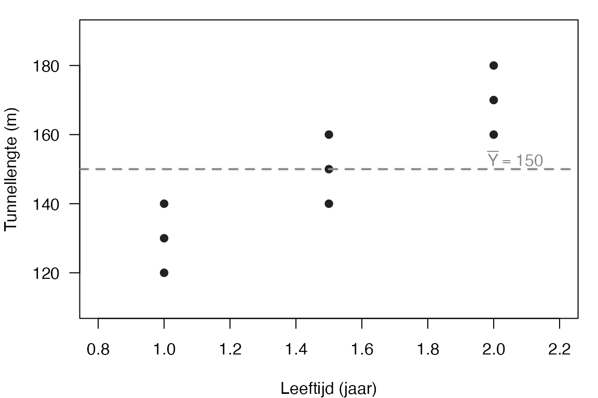
NoteTussen-vraag
Als je geen idee had van leeftijd, zou je voor élke nieuwe mol gewoon \(\bar Y = 150\) voorspellen. Wat verlies je daarmee? Antwoord: je verklaart nul van de variatie in tunnellengte uit leeftijd — alle afwijkingen zijn “gokfouten”. Daar gaan we wat aan doen.
0.2 De slope, met de hand getekend
Voor de formule: kijk gewoon naar twee punten. Een mol van 1 jaar groef ergens 130 meter; een mol van 2 jaar groef ergens 170 meter. Je trekt een denkbeeldige lijn. Hoe steil?
\[\frac{\Delta Y}{\Delta X} = \frac{170 - 130}{2 - 1} = \frac{40}{1} = 40 \text{ meter per jaar}\]
Niet exact — je hebt twee punten gepakt uit negen, en die zijn niet de lijn, het zijn maar twee punten. Maar de orde-grootte klopt. Mollen graven ongeveer 40 meter per extra jaar. Dat is \(b_1\) in eerste benadering, gewoon door te kijken.
De rest van deze sectie maakt dat exact.
0.3 De slope, met de formule
We willen \(b_1\) uit alle negen punten samen, niet uit twee. De recept-formule:
\[b_1 = \frac{SS_{XY}}{SS_X}\]
Waar \(SS_{XY} = \sum (X_i - \bar X)(Y_i - \bar Y)\) en \(SS_X = \sum (X_i - \bar X)^2\).
Vul de tabel zelf:
| \(i\) | \(X_i\) | \(Y_i\) | \(X_i - \bar X\) | \(Y_i - \bar Y\) | \((X-\bar X)^2\) | \((Y-\bar Y)^2\) | \((X-\bar X)(Y-\bar Y)\) |
|---|---|---|---|---|---|---|---|
| 1 | 1 | 120 | \(-0.5\) | \(-30\) | \(0.25\) | \(900\) | \(15\) |
| 2 | 1 | 130 | \(-0.5\) | \(-20\) | \(0.25\) | \(400\) | \(10\) |
| 3 | 1 | 140 | \(-0.5\) | \(-10\) | \(0.25\) | \(100\) | \(5\) |
| 4 | 1.5 | 140 | \(0\) | \(-10\) | \(0\) | \(100\) | \(0\) |
| 5 | 1.5 | 150 | \(0\) | \(0\) | \(0\) | \(0\) | \(0\) |
| 6 | 1.5 | 160 | \(0\) | \(10\) | \(0\) | \(100\) | \(0\) |
| 7 | 2 | 160 | \(0.5\) | \(10\) | \(0.25\) | \(100\) | \(5\) |
| 8 | 2 | 170 | \(0.5\) | \(20\) | \(0.25\) | \(400\) | \(10\) |
| 9 | 2 | 180 | \(0.5\) | \(30\) | \(0.25\) | \(900\) | \(15\) |
| Som | \(SS_X = 1.5\) | \(SS_Y = 3000\) | \(SS_{XY} = 60\) |
Met \(\bar X = 1.5\) en \(\bar Y = 150\). (Reken die zelf na uit kolom 2 en 3.)
Dan:
\[b_1 = \frac{SS_{XY}}{SS_X} = \frac{60}{1.5} = 40\]
Klopt met je-twee-punten-schatting. Mollen graven 40 meter tunnel per extra jaar leeftijd. En zo ziet de regressielijn eruit:
par(mar = c(4, 4, 1, 1))
plot(mollen$leeftijd, mollen$tunnellengte,
xlim = c(0.8, 2.2), ylim = c(110, 190),
xlab = "Leeftijd (jaar)", ylab = "Tunnellengte (m)",
pch = 19, col = col_pt, las = 1)
abline(h = y_bar, col = col_ybar, lty = 2, lwd = 2)
abline(a = b0, b = b1, col = col_line, lwd = 3)
text(2.15, y_bar + 3, expression(bar(Y)), col = col_ybar, adj = 1)
text(2.15, 178, expression(hat(Y) == 90 + 40 * X), col = col_line, adj = 1, font = 2)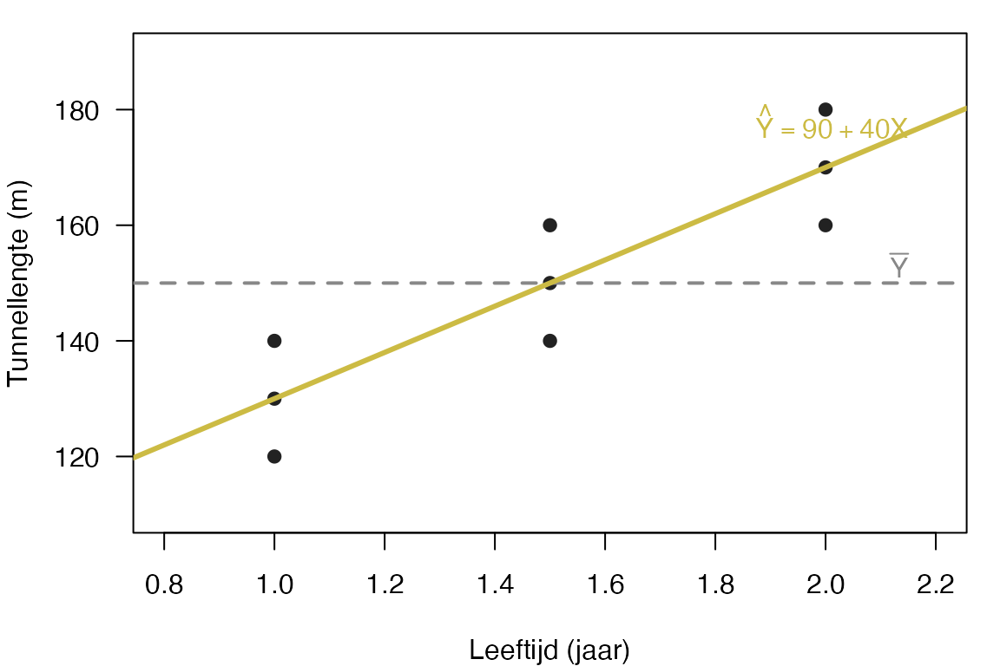
T0a — slope reproduceren
Hierboven staan \(SS_X = 1.5\), \(SS_Y = 3000\), \(SS_{XY} = 60\). Reken zelf na in elke kolom. Bij de derde rij (\(X=1, Y=140\)): \((X-\bar X)(Y-\bar Y) = -0.5 \cdot -10 = 5\). Klopt met de tabel?
0.4 Het intercept
De lijn loopt altijd door \((\bar X, \bar Y)\). Daar leunt het intercept op:
\[b_0 = \bar Y - b_1 \cdot \bar X = 150 - 40 \cdot 1.5 = 150 - 60 = 90\]
Voor onze mollen geeft het:
\[\hat Y = 90 + 40 \cdot X\]
Bij \(X = 0\) (een pasgeboren mol) zou de voorspelde tunnellengte 90 meter zijn. Dat is buiten je datagebied — geen mol in het lijstje was nul jaar oud, dus die uitspraak is een verlenging die niets met de data te maken heeft. \(b_0\) is een wiskundig snijpunt, geen biologische voorspelling.
WarningExtrapolatie
Het intercept is alleen interpretabel als \(X = 0\) binnen je datagebied valt. Anders: rapporteer de waarde, gebruik ’m voor de lijn, maar doe geen uitspraken over \(X = 0\) zonder dat te flaggen.
0.5 Voorspellen + residuen
Met \(\hat Y = 90 + 40 X\) kun je voor elke mol een voorspelling doen — en zien waar je naast zit.
| \(i\) | \(X_i\) | \(Y_i\) | \(\hat Y_i = 90 + 40 X_i\) | \(e_i = Y_i - \hat Y_i\) |
|---|---|---|---|---|
| 1 | 1 | 120 | \(130\) | \(-10\) |
| 2 | 1 | 130 | \(130\) | \(0\) |
| 3 | 1 | 140 | \(130\) | \(10\) |
| 4 | 1.5 | 140 | \(150\) | \(-10\) |
| 5 | 1.5 | 150 | \(150\) | \(0\) |
| 6 | 1.5 | 160 | \(150\) | \(10\) |
| 7 | 2 | 160 | \(170\) | \(-10\) |
| 8 | 2 | 170 | \(170\) | \(0\) |
| 9 | 2 | 180 | \(170\) | \(10\) |
| Som | \(0\) |
Twee dingen om op te merken:
- De voorspelling per leeftijdsgroep is constant — alle mollen van 1 jaar krijgen dezelfde \(\hat Y = 130\). Logisch: ons model kent alleen leeftijd, dus drie mollen van 1 jaar zijn niet uit elkaar te houden.
- De residuen tellen op tot nul. Altijd. Dat is een rekenkundige eigenschap van OLS, geen toeval. Klopt het bij jou? Mooi. Anders fout gerekend.
par(mar = c(4, 4, 1, 1))
plot(mollen$leeftijd, mollen$tunnellengte,
xlim = c(0.8, 2.2), ylim = c(110, 190),
xlab = "Leeftijd (jaar)", ylab = "Tunnellengte (m)",
pch = 19, col = col_pt, las = 1)
abline(h = y_bar, col = col_ybar, lty = 2, lwd = 1.5)
abline(a = b0, b = b1, col = col_line, lwd = 3)
# Rode residu-streepjes: van Yhat naar Y per mol.
# Lichte horizontale shift voor leesbaarheid bij overlappende punten.
xshift <- c(-0.04, 0, 0.04, -0.04, 0, 0.04, -0.04, 0, 0.04)
for (i in seq_len(nrow(mollen))) {
segments(mollen$leeftijd[i] + xshift[i], mollen$Yhat[i],
mollen$leeftijd[i] + xshift[i], mollen$tunnellengte[i],
col = col_error, lwd = 3)
}
points(mollen$leeftijd + xshift, mollen$tunnellengte, pch = 19, col = col_pt)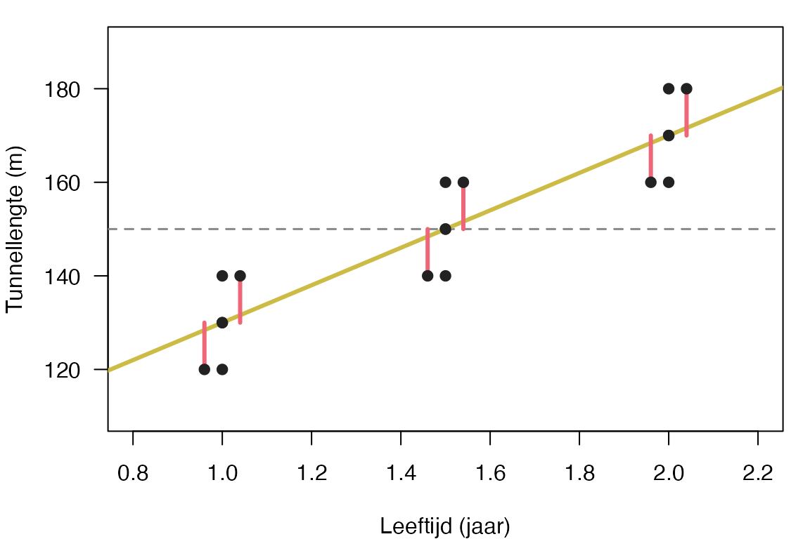
0.6 Drie kwadratensommen — en de visuele decompositie
We splitsen de variatie in \(Y\) op in drie stukken:
- \(SS_T\) (totaal) = hoe ver liggen de \(Y_i\)’s van \(\bar Y\)? — de blauwe afwijkingen.
- \(SS_M\) (model) = hoe ver liggen de voorspellingen \(\hat Y_i\) van \(\bar Y\)? — de groene verschuivingen.
- \(SS_E\) (error) = hoe ver liggen de \(Y_i\)’s van hun eigen voorspelling \(\hat Y_i\)? — de rode residuen.
Voor één mol — laten we mol 9 nemen (\(X = 2\), \(Y = 180\), \(\hat Y = 170\), \(\bar Y = 150\)) — werkt het zó:
par(mar = c(4, 4, 1, 1))
plot(mollen$leeftijd, mollen$tunnellengte,
xlim = c(0.8, 2.4), ylim = c(110, 190),
xlab = "Leeftijd (jaar)", ylab = "Tunnellengte (m)",
pch = 19, col = "#BBBBBB", las = 1)
abline(h = y_bar, col = col_ybar, lty = 2, lwd = 1.5)
abline(a = b0, b = b1, col = col_line, lwd = 3)
text(0.85, y_bar + 3, expression(bar(Y) == 150), col = col_ybar, adj = 0)
# Mol 9: X = 2, Y = 180, Y_hat = 170, Y_bar = 150
xc <- 2
y_obs <- 180
y_hat <- 170
# Drie verticale kleurstreepjes naast elkaar voor leesbaarheid.
sh <- 0.05
# Blauw: Y - Ybar = 30 — TOTAAL
segments(xc - sh, y_bar, xc - sh, y_obs, col = col_total, lwd = 5)
text(xc - sh - 0.06, (y_bar + y_obs) / 2,
expression(Y - bar(Y) == 30), col = col_total, adj = 1, font = 2)
# Groen: Yhat - Ybar = 20 — MODEL
segments(xc, y_bar, xc, y_hat, col = col_model, lwd = 5)
text(xc + 0.07, (y_bar + y_hat) / 2,
expression(hat(Y) - bar(Y) == 20), col = col_model, adj = 0, font = 2)
# Rood: Y - Yhat = 10 — ERROR
segments(xc + sh, y_hat, xc + sh, y_obs, col = col_error, lwd = 5)
text(xc + sh + 0.06, (y_hat + y_obs) / 2,
expression(Y - hat(Y) == 10), col = col_error, adj = 0, font = 2)
# Het punt zelf + label
points(xc, y_obs, pch = 19, col = "black", cex = 1.3)
text(xc, y_obs + 3, "mol 9", adj = 0.5, cex = 0.9)
# De optelling
mtext(expression(30 == 20 + 10), side = 3, line = -1.5, adj = 0.05, cex = 1.1, font = 2)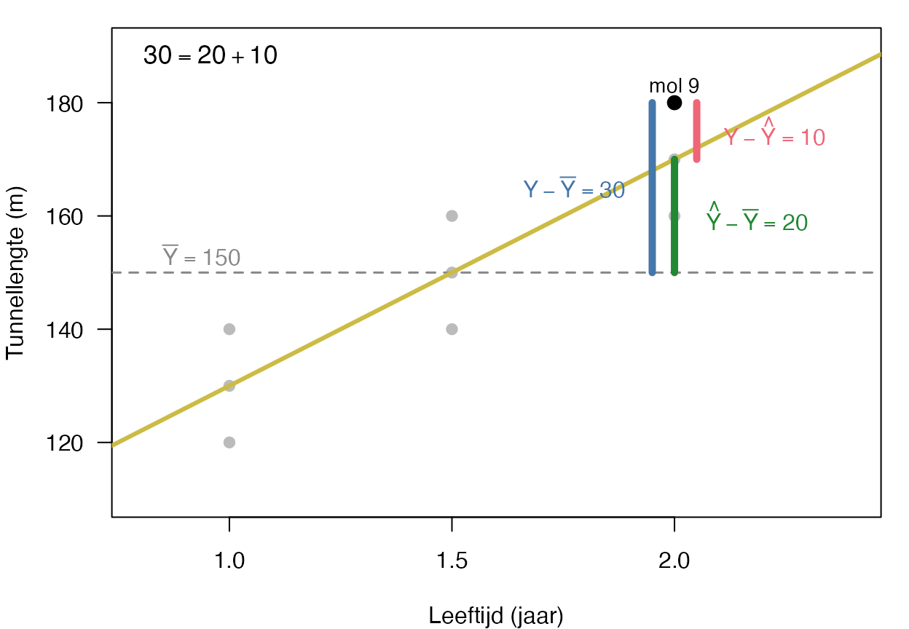
Op het niveau van één mol klopt de optelling lineair: altijd \(Y - \bar Y = (\hat Y - \bar Y) + (Y - \hat Y)\). Voor mol 9: \(30 = 20 + 10\). Voor mol 1: \(-30 = -20 + (-10)\). Probeer ’m zelf voor twee andere mollen.
Maar we willen niet één mol — we willen alle negen tegelijk. En dan tellen we niet de afstanden, we tellen de kwadraten. Want anders heffen positieve en negatieve afwijkingen elkaar op.
\[SS_T = \sum (Y_i - \bar Y)^2 = 3000 \qquad SS_M = \sum (\hat Y_i - \bar Y)^2 = 2400 \qquad SS_E = \sum e_i^2 = 600\]
ImportantDe identiteit die altijd moet kloppen
\[SS_T = SS_M + SS_E\]
Bij ons: \(3000 = 2400 + 600\). ✓
De truc is dat het kruisproduct \(\sum (\hat Y_i - \bar Y)(Y_i - \hat Y_i)\) bij OLS exact nul wordt — daarom kun je sommen-van-kwadraten zomaar optellen alsof het Pythagoras is. (Het is Pythagoras, in een hogerdimensionale ruimte. Daar kom je in een goede vervolgcursus op terug.)
Klopt het niet? Dan heb je érgens een rekenfout gemaakt — niet in de theorie, in jouw blokje. Zoek ’m.
En zo zien die drie sommen er als oppervlakken uit:
SS_T <- 3000; SS_M <- 2400; SS_E <- 600
sT <- sqrt(SS_T); sM <- sqrt(SS_M); sE <- sqrt(SS_E)
par(mar = c(0, 0, 1, 0))
plot(NA, xlim = c(0, 200), ylim = c(0, 60),
asp = 1, axes = FALSE, xlab = "", ylab = "")
# Blauw vierkant — SS_T
rect(0, 0, sT, sT, col = col_total, border = NA)
text(sT / 2, sT / 2, expression(SS[T] == 3000),
col = "white", font = 2, cex = 1.05)
# =
text(64, sT / 2, "=", cex = 3)
# Groen vierkant — SS_M
xg <- 72
rect(xg, 0, xg + sM, sM, col = col_model, border = NA)
text(xg + sM / 2, sM / 2, expression(SS[M] == 2400),
col = "white", font = 2, cex = 1.05)
# +
text(130, sT / 2, "+", cex = 3)
# Rood vierkant — SS_E
xr <- 138
rect(xr, 0, xr + sE, sE, col = col_error, border = NA)
text(xr + sE / 2, sE / 2, expression(SS[E] == 600),
col = "white", font = 2, cex = 0.9)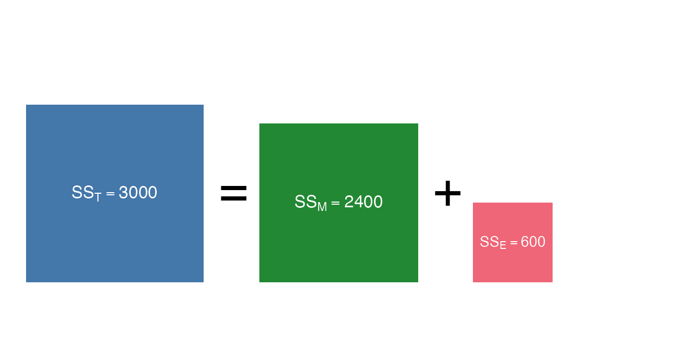
Drie vierkanten — drie soorten variatie. Wat erin zit aan oppervlak telt op tot het blauwe geheel.
0.7 \(R^2\) uit twee paden — en als Venn
Hoeveel van de totale variatie in tunnellengte verklaart leeftijd?
Pad 1 — variantie-decompositie:
\[R^2 = \frac{SS_M}{SS_T} = \frac{2400}{3000} = 0.80\]
Pad 2 — kwadraat van de correlatie:
\[r = \frac{SS_{XY}}{\sqrt{SS_X \cdot SS_Y}} = \frac{60}{\sqrt{1.5 \cdot 3000}} = \frac{60}{\sqrt{4500}} = \frac{60}{67.082} = 0.8944\]
\[R^2 = r^2 = 0.8944^2 = 0.80\]
Beide paden geven \(R^2 = .80\). Dat is geen toeval. In enkelvoudige regressie zijn “verklaarde-variantie-verhouding” en “correlatie-kwadraat” hetzelfde getal — twee namen voor dezelfde grootheid. En als Venn:
# eulerr maakt twee cirkels van gelijke grootte met overlap = R^2.
# Y-only = X-only = 0.20; gedeelde overlap = 0.80 → 80% van elke cirkel overlapt.
library(eulerr)
set.seed(1)
v <- euler(c("Y" = 0.20, "X" = 0.20, "Y&X" = 0.80))
plot(v,
fills = list(fill = c(col_total, col_line), alpha = 0.55),
edges = list(col = c(col_total, col_line), lwd = 2),
labels = list(font = 2, fontsize = 14),
quantities = FALSE)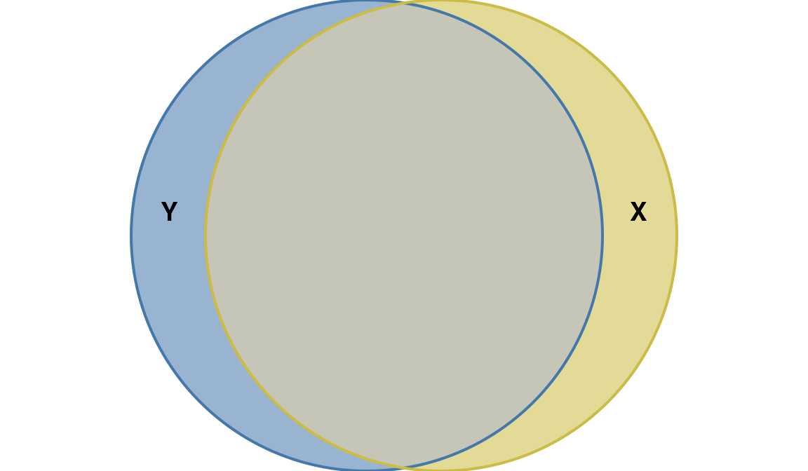
TipWat \(R^2 = .80\) betekent
Tachtig procent van de variatie in tunnellengte tussen deze negen mollen valt samen met variatie in leeftijd. Niet meer, niet minder. Het zegt niets over of leeftijd oorzaak is — alleen dat ze samen variëren.
0.8 De \(F\)-toets — en de sudoku-tabel
Met je drie \(SS\)’en kom je nu de ANOVA-tabel binnen. Eerst de df (degrees of freedom).
NoteVrijheidsgraden zonder formule — wie zit vast, wie is vrij?
Stel: vier mollen, en het gemiddelde van hun tunnellengtes is \(150\). Ik geef je de eerste drie mollen: \(120\), \(140\), \(160\). Hoe lang was de tunnel van de vierde mol?
Geen ontsnappen aan — \(180\). Eén getal kan het zijn, en jij rekent het uit: \(4 \cdot 150 - 120 - 140 - 160 = 180\). De vierde mol zit vast aan wat de eerste drie zijn, gegeven het gemiddelde. Drie mollen zijn vrij om te zwerven; eentje moet de boel weer kloppend maken.
Dat is een vrijheidsgraad in zijn intuïtiefste vorm: hoeveel getallen mogen nog vrij variëren als je een paar dingen al hebt vastgelegd. Voor een gemiddelde van \(N\) getallen: \(N - 1\) zijn vrij, eentje volgt. Voor een regressielijn die \(p\) voorspellers + een intercept gebruikt: \(p + 1\) getallen liggen vast, dus \(N - p - 1\) residuen zijn vrij.
Iets uitgebreider — een kruistabel. Je hebt \(15\) vrouwen ingedeeld in een \(2 \times 3\) tabel (twee rijen, drie kolommen), en de rij- en kolomtotalen ken je. Hoeveel cellen moet je weten om de hele tabel in te vullen?
Twee. De andere vier volgen uit de totalen. Formule: \(df = (r - 1)(k - 1) = 1 \cdot 2 = 2\). Dezelfde logica — vastgelegde randen, vrije cellen daarbinnen.
- \(df_M = p = 1\) (één voorspeller)
- \(df_E = N - p - 1 = 9 - 1 - 1 = 7\)
- \(df_T = N - 1 = 8\)
Check: \(df_T = df_M + df_E\), dus \(8 = 1 + 7\). ✓ — altijd.
Dan MS (mean squares, gemiddelde kwadraten) — de delingen:
\[MS_M = \frac{SS_M}{df_M} = \frac{2400}{1} = 2400, \qquad MS_E = \frac{SS_E}{df_E} = \frac{600}{7} = 85.71\]
En de \(F\):
\[F = \frac{MS_M}{MS_E} = \frac{2400}{85.71} = 28.0\]
T0d — sudoku-tabel
Vul de ontbrekende cellen in deze ANOVA-tabel met de hand. Controleer met de tabel hierboven, maar reken eerst zelf.
| Bron | \(SS\) | \(df\) | \(MS\) | \(F\) |
|---|---|---|---|---|
| Model | \(2400\) | |||
| Error | \(7\) | \(85.71\) | — | |
| Totaal | \(3000\) | \(8\) | — | — |
Tip: alle cellen volgen uit twee identiteiten (\(SS_T = SS_M + SS_E\), \(df_T = df_M + df_E\)) en twee delingen (\(MS = SS / df\), \(F = MS_M / MS_E\)). Je hoeft niets te schatten — gewoon reconstrueren.
NoteAntwoord — open na je eigen poging
| Bron | \(SS\) | \(df\) | \(MS\) | \(F\) |
|---|---|---|---|---|
| Model | \(2400\) | \(1\) | \(2400\) | \(28.0\) |
| Error | \(600\) | \(7\) | \(85.71\) | — |
| Totaal | \(3000\) | \(8\) | — | — |
\(SS_E = SS_T - SS_M = 3000 - 2400 = 600\). \(df_M = df_T - df_E = 8 - 7 = 1\). \(MS_M = 2400/1 = 2400\). \(F = 2400/85.71 = 28.0\). Alles via vier optellingen en delingen.
0.8a Wat zegt die \(F\) nou eigenlijk? — het bakkersverhaal
Aan het einde van de straat zit een bakker. Al jaren. Je weet wat je krijgt: croissantjes, een bruin brood, een kruimelvlaai op zaterdag. Op een dag loop je naar binnen — en in het midden van de winkel staat een fiets. Een echte. Met bel. Niks geen brood, alleen een fiets.
Eerste gedachte: hij is geen bakker meer. Niet omdat een bakker geen fiets in zijn zaak mag hebben — dat mag van mij — maar omdat het zo schreeuwend onwaarschijnlijk is dat een bakker daar een fiets neerzet. Iets klopt niet. Iets is veránderd.
Dat is precies wat een toets is. Je hebt een nulhypothese \(H_0\): “er is geen verandering, de bakker is nog bakker.” In ons mollen-voorbeeld is dat: “in de populatie van mollen heeft leeftijd geen effect op tunnellengte”, \(H_0: b_1^* = 0\). Dan loop je de winkel binnen (= je doet een steekproef), en je rekent uit hoe gek wat je ziet zou zijn als de bakker écht nog bakker was.
Dat hoe-gek-getal heet de \(p\)-waarde: de kans op iets dat minstens zo extreem is als wat jij vond, gegeven dat \(H_0\) klopt. Een fiets in de bakker is extreem onwaarschijnlijk in bakker-land — dus \(p\) is heel laag — dus je verwerpt \(H_0\). De bakker is geen bakker meer.
TipMnemoniek voor onder de douche
“When \(p\) is low, \(H_0\) must go.”
Engels rijmt soms beter dan Nederlands. Lage \(p\) (\(< .05\) in het standaard-ritueel) = de nulhypothese wegtrappen. Hoge \(p\) = je kunt ’m niet wegtrappen, en dus blijft \(H_0\) voorlopig overeind (niet bewezen, niet weerlegd). Het is geen oordeel over de waarheid, het is een verrassings-getal gegeven een aanname.
WarningTwee dingen die de bakker je leert over \(H_0\)
- \(H_0\) gaat altijd over de populatie, nooit over je steekproef. “In bakker-land staan er nooit fietsen in winkels” — niet “in deze ene bakker stond nog nooit een fiets”. De steekproef is je dag-bezoek; de uitspraak gaat over het hele winkel-landschap.
- De \(F\)-toets gelooft eerst \(H_0\). Hij berekent: gegeven dat \(H_0\) klopt, hoe verrassend is wat ik vond? Niet andersom. Veel studenten denken dat een \(F\)-toets “het effect aantoont”. Nee — hij zegt: als er geen effect was, hoe vaak zou ik dan dit of nog gekkers tegenkomen?
Voor de mollen: \(F(1, 7) = 28.0\) met dat \(p < .01\). Een \(F\) van \(28\) is geen croissantje meer, dat is een fiets. We verwerpen \(H_0\) en zeggen: in de populatie heeft leeftijd ergens een effect op tunnellengte (\(b_1^* \neq 0\)).
NoteEven terug — psychometrie
Bij psychometrie heb je deze zelfde tweetabel al gezien, alleen in andere woorden:
| Beslissing \ Werkelijkheid | \(H_0\) waar | \(H_1\) waar |
|---|---|---|
| Verwerp \(H_0\) (zeg: “verschil!”) | type-1 fout (\(\alpha\)) | terecht — power |
| Behoud \(H_0\) (zeg: “niks aan de hand”) | terecht — \(1 - \alpha\) = specificiteit | type-2 fout (\(\beta\)) |
Of, in psychometrie-jargon: sensitiviteit = power (kans dat je iets vindt als er iets te vinden is), specificiteit = \(1 - \alpha\) (kans dat je niets vindt als er niets is). Dezelfde 2×2 — andere woorden. Wie het ene snapt, snapt het andere automatisch. Het is geen toeval dat ze parallel lopen: ze gáán over hetzelfde.
0.9 \(r\), \(b_1\), en \(\beta\) — dezelfde verhouding in andere kleren
Voor de mollen vonden we drie getallen:
- \(b_1 = 40\) (slope in ruwe eenheden: meter per jaar)
- \(r = 0.8944\) (correlatie, eenheidsloos)
- \(\beta = ?\) (gestandaardiseerde slope)
Tussen \(r\) en \(b_1\) zit de schaal-verhouding:
\[b_1 = r \cdot \frac{s_Y}{s_X}\]
Met \(s_X = \sqrt{SS_X / (N-1)} = \sqrt{1.5/8} = 0.4330\) en \(s_Y = \sqrt{SS_Y / (N-1)} = \sqrt{3000/8} = 19.36\):
\[b_1 = 0.8944 \cdot \frac{19.36}{0.4330} = 0.8944 \cdot 44.72 = 40 \checkmark\]
En de gestandaardiseerde slope:
\[\beta = b_1 \cdot \frac{s_X}{s_Y} = 40 \cdot \frac{0.4330}{19.36} = 0.8944\]
Dus: \(\beta = r\) in enkelvoudige regressie. Dezelfde grootheid — alleen herschaald naar standaardafwijkingen.
ImportantRuw is Ruk — en waarom dat hoofdstuk 1 bestaat
Bij één voorspeller geldt \(\beta = r\). Bij meervoudige regressie breekt deze gelijkheid: er komen partial- en semipartial-correlaties bij, en \(\beta_j\) vertelt iets anders dan \(r\) tussen \(X_j\) en \(Y\).
Dat is precies waar het volgende hoofdstuk over gaat. Onthou de slogan — straks wordt ’ie hard.
0.10 R-check via lm()
Tot slot: laat R hetzelfde uitrekenen, en kijk of jouw handgetallen kloppen.
model_mollen <- lm(tunnellengte ~ leeftijd, data = mollen)
summary(model_mollen)
Call:
lm(formula = tunnellengte ~ leeftijd, data = mollen)
Residuals:
Min 1Q Median 3Q Max
-10 -10 0 10 10
Coefficients:
Estimate Std. Error t value Pr(>|t|)
(Intercept) 90.000 11.751 7.659 0.00012 ***
leeftijd 40.000 7.559 5.292 0.00113 **
---
Signif. codes: 0 '***' 0.001 '**' 0.01 '*' 0.05 '.' 0.1 ' ' 1
Residual standard error: 9.258 on 7 degrees of freedom
Multiple R-squared: 0.8, Adjusted R-squared: 0.7714
F-statistic: 28 on 1 and 7 DF, p-value: 0.001134Wat je in de output moet herkennen:
(Intercept) Estimate= \(b_0 = 90\)leeftijd Estimate= \(b_1 = 40\)Multiple R-squared= \(0.80\)F-statistic= \(28\) op \(1\) en \(7\) dfResiduals(\(-10, 0, 10\) in groepjes) = de residuen-tabel uit 0.5
# ANOVA-decompositie — zie of de getallen exact matchen met je sudoku-tabel.
anova(model_mollen)Analysis of Variance Table
Response: tunnellengte
Df Sum Sq Mean Sq F value Pr(>F)
leeftijd 1 2400 2400.00 28 0.001134 **
Residuals 7 600 85.71
---
Signif. codes: 0 '***' 0.001 '**' 0.01 '*' 0.05 '.' 0.1 ' ' 1Sum Sq voor leeftijd = 2400, voor Residuals = 600. Klopt? Mooi. Anders fout gerekend.
Wat we nu hebben — voor de overstap naar meervoudig
Eén voorspeller, één \(b_1\), één \(r\), één \(R^2\). Alle SS’en, alle df, één \(F\) — en alles te reconstrueren met optellingen en delingen.
Vanaf hier wordt het meervoudig. Drie voorspellers tegelijk; ineens praten we niet meer over de slope maar over \(b_1, b_2, b_3\) — én over wat ze betekenen gegeven dat de andere twee meelopen. Daar wordt het interessant. En daar breekt \(\beta = r\).
Doorgaan naar Section 6. (De negen mollen blijven hier liggen voor je naslagwerk. Hoofdstuk 1 begint met andere dieren.)
1. Multipele Regressieanalyse (MRA)
Het verhaal van dit thema
“Mier,” zei de eekhoorn, “kun je voorspellen hoeveel noten een dier oogst?”
De mier dacht na. “Op grond van wat?”
“Op grond van hoe slim hij denkt te zijn. En zijn leeftijd. En of hij van zichzelf vindt dat hij wel meetelt.”
De mier keek naar het lijstje. Vierenzeventig dieren, vierenzeventig regeltjes, en bij elk regeltje vier getallen. “Misschien,” zei de mier. “Maar dan moeten we gaan rekenen.”
Wat de mier berekent heet multiple regression analysis MRA, en je stelt elke keer dezelfde drie vragen aan je gegevens:
- Voorspelt het samen überhaupt iets? — de \(F\)-toets F-test op het hele model, met \(R^2\) als hoeveel-zegt-het.
- Wie van de voorspellers predictors draagt nog bij als de anderen al meedoen? — de \(t\)-toetsen per coëfficiënt, met de semipartiële correlatie semipartial correlation als hoeveel-zegt-juist-deze.
- Klopt het allemaal wel? — de aannames assumptions: onafhankelijkheid van observaties independence of observations (geen herhaalde metingen op hetzelfde dier in dit model, geen geclusterde data), lineariteit, gelijke spreiding homoscedasticity, normaal verdeelde foutjes normally distributed residuals, geen voorspellers die op elkaar lijken multicollinearity, geen raar dier dat het model in zijn eentje stuurt influential outlier.
NoteHoe dit hoofdstuk leest
Bij elke serieuze stap zie je twee blokken naast elkaar: de algemene vorm (de abstracte statistiek-zin, met Y, X1, mijn_data) en daarna voor onze dieren (dezelfde zin, in onze concrete bos-wereld). Wie die twee blokken naast elkaar leert lezen, leert eigenlijk de hele cursus: hoe een statistisch idee zijn vorm krijgt in échte gegevens.
NoteDrie symbolen voor regressiecoëfficiënten
In dit werkboek zie je drie verwante symbolen:
- \(b_j^*\) — het werkelijke effect van \(X_j\) op \(Y\) in de populatie. Onbekend; dit is wat we willen weten.
- \(b_j\) — de schatting van \(b_j^*\) op basis van je steekproef. Wat
summary(lm)je geeft in de kolom Estimate. Hangt af van de meeteenheden van \(X\) en \(Y\). - \(\beta_j\) — de gestandaardiseerde versie van \(b_j\): hetzelfde effect, maar uitgedrukt in standaarddeviaties. Daardoor vergelijkbaar tussen voorspellers, ongeacht hun oorspronkelijke meeteenheden.
In hypothese-toetsen praten we altijd over de populatie — dus daar staat altijd \(b_j^*\): \(H_0: b_j^* = 0\), “in de populatie heeft \(X_j\) géén effect.”
Voor correlaties bestaat de compacte vorm \(r_{Y(1 \cdot 2)}\); wij schrijven de variabele-namen uit (\(r_{Y(X_1 \cdot X_2)}\)) zodat de notatie zichzelf uitlegt.
NoteCode in dit hoofdstuk — wat moet je kunnen typen?
Code is standaard open als je hem moet kunnen typen op het R-practical-tentamen: lm(), summary(), vif(), plot(model, which = 1/2), rstandard(), hatvalues(), cooks.distance(), ols_correlations(), anova(m1, m2). Code die alleen ter illustratie dient — verkenning, simulaties, Venn-tekeningen — staat ingeklapt met een knopje “Toon code”. Klap hem open als je nieuwsgierig bent; voor het tentamen hoef je hem niet te kunnen reproduceren.
TipVuistregels zijn afspraken, geen wetten
De drempels in dit werkboek (\(\text{VIF}_j \geq 10\), Cook’s distance \(> 1\), leverage \(> 3(k+1)/N\), \(|\text{stdres}| > 3\), \(N/k \geq 20\)) zijn breed gangbare conventies — maar niet universeel. Verschillende vakgroepen, docenten en handboeken kiezen iets andere getallen (\(2(k+1)/N\) voor leverage in sommige bronnen; \(\text{VIF}_j \geq 5\) in conservatievere kringen; \(D > 4/N\) voor Cook’s distance bij grotere \(N\)). Als je voor een tentamen of opdracht werkt, check altijd in je eigen college-sheets welke drempels je docent of vakgroep hanteert. Wij volgen hier consistent één set, maar dat is een keuze, geen natuurwet.
TipObject-altijd-erbij — verschil in wat? In mijn moeder?
Eén taalkundige reflex die je gaat redden in deze cursus. In stat-taal hebben werkwoorden als verschil, effect, samenhang, voorspellen, significant en verklaart een verplicht object: de afhankelijke variabele waar de uitspraak over gaat. In algemeen taalgebruik wordt dat object vaak weggelaten — “geen verschil tussen mannen en vrouwen”, “X heeft effect”, “is significant”. Geen probleem als je al weet waarover het gaat. Wel een probleem als je net begint, of bij ingewikkelde stof waar drie variabelen tegelijk in een zin staan.
Vuistregel:
| ❌ Onvolledig | ✅ Volledig |
|---|---|
| effect van X | effect van X op Y |
| verschil tussen groepen | verschil in Y tussen groepen |
| samenhang met X | samenhang tussen X en Y |
| X voorspelt | X voorspelt Y |
| invloed van X | invloed van X op Y |
| is significant | significant effect op Y / significant verschil in Y |
| verklaart variantie | verklaart variantie in Y |
Symptoom-test. Lees je ergens “vond geen verschil” — vraag dan: verschil in mijn moeder? Nee, in [iets]. Vul dat iets expliciet in. Doet de zin het zonder dat? Dan zit Y er impliciet in. Doet ie het niet? Dan hoort Y er expliciet in.
Spiegel-regel. Een effect van X op Y omgedraaid wordt: verschil in Y door verschillen in X. Niet “verschil door X” — dat zegt niets.
Klein principe, groot rendement. Hou de Y er altijd bij; je dankt jezelf later, vooral als de techniek complexer wordt en de zinnen langer.
Werkmaterialen — R-pakketten en functies
Het keukenkastje van de eekhoorn
| Gereedschap | Waar het voor is | Pakket |
|---|---|---|
lm() |
Trekt een lijn door een wolk van getallen | base |
summary() |
Vertelt wat de lijn precies doet (\(R^2\), helling per voorspeller, \(F\) en \(t\)) | base |
vif() |
Vraagt of voorspellers stiekem hetzelfde zeggen | car |
hatvalues() |
Wijst aan welke dieren ver van het midden staan (leverage) | base |
rstandard() |
Standaardiseert de afwijkingen van het model | base |
cooks.distance() |
Vraagt aan elk dier: “als je weg was, hoeveel zou er dan veranderen?” | base |
plot(model, which = 1) |
Het plaatje van foutjes tegen voorspelde waarden | base |
plot(model, which = 2) |
De Q-Q-plot voor normaliteit | base |
ols_correlations() |
Splitst correlaties in zero-order, partial en part | olsrr |
anova(m1, m2) |
Vergelijkt twee modellen die in elkaar passen | base |
NoteVoor wie nieuw is met pakketten
Een pakket is een verzameling extra gereedschap dat niet automatisch in R zit. Je installeert het één keer met install.packages("naam"), en je laadt het elke sessie met library(naam). Daarna kun je de functies eruit gebruiken alsof ze altijd al van jou waren.
Volgorde-regel. Zet alle library()-aanroepen bovenaan je script — vóór elk gebruik van een functie uit dat pakket. Schuif je library(olsrr) per ongeluk onder een ols_correlations()-regel, dan klaagt R “could not find function”. Vervelend, en altijd dezelfde oplossing: pakket boven gebruik.
1.0 Project- en datavoorbereiding
Het werkkamertje staat al klaar
Open de meegestuurde projectmap (01_meervoudige_regressie/) en dubbelklik op 01_meervoudige_regressie.Rproj. Daarmee staat je werkomgeving klaar: paden kloppen, RStudio kent de juiste werkmap. De data ligt al in data/, de helper-functies in functions/. Niets te installeren als de drie pakketten (car, olsrr, tidyverse) op je computer staan; anders één keer install.packages(...).
- Open de eerste dataset.
Algemene vorm. Een dataset laden uit een .RData-bestand en even snel inkijken doe je zo:
load("data/jouw_data.RData")
str(jouw_data)load() zet het object dat in het bestand bewaard is direct in je sessie — onder de naam waaronder het ooit is opgeslagen. Met str() zie je in één regel welke kolommen erin zitten, hun type, en de eerste paar waarden.
Voor onze dieren. Het bestand bevat een data frame met de naam bos_dieren.
# Laad het bestand. Het object 'bos_dieren' verschijnt vanzelf.
load("data/notenoogst_in_het_bos.RData")
# Bekijk structuur, kolommen, types en eerste waarden.
str(bos_dieren)'data.frame': 74 obs. of 4 variables:
$ notenoogst: num 79.6 88.2 67.8 81.3 56.7 ...
$ denkkunst : num 106 113 104 113 105 ...
$ leeftijd : num 12 12 11 12 11 ...
$ zelfgevoel: num 37.2 67.8 34.8 59.6 65.6 ...Per dier vier getallen: hoeveel noten hij dit jaar oogstte (notenoogst), hoe slim hij denkt (denkkunst), hoe oud hij is (leeftijd), en wat hij van zichzelf vindt (zelfgevoel).
- Bekijk de
class()van elke variabele.
Toon code (verkenning, niet tentamen-stof)
# sapply() laat je een functie op elke kolom van een data frame loslaten.
sapply(bos_dieren, class)notenoogst denkkunst leeftijd zelfgevoel
"numeric" "numeric" "numeric" "numeric" Allemaal numeric. Mooi — dan kunnen we ermee rekenen zonder eerst te converteren.
- Schrijf code voor een lineair regressiemodel dat notenoogst voorspelt uit denkkunst, leeftijd en zelfgevoel.
Algemene vorm. Een lineair regressiemodel met één uitkomst \(Y\) en meerdere voorspellers \(X_1, X_2, X_3\):
mijn_model <- lm(Y ~ X1 + X2 + X3, data = mijn_data)
summary(mijn_model)De ~ (tilde) lees je als “voorspeld door”. lm() schat de coëfficiënten, summary() print de uitkomst.
Voor onze dieren.
# Schat het regressiemodel: notenoogst voorspeld door drie eigenschappen.
lm_bos <- lm(notenoogst ~ denkkunst + leeftijd + zelfgevoel,
data = bos_dieren)
# Print de uitkomst: coëfficiënten, t-toetsen, F-toets, R-squared.
summary(lm_bos)
Call:
lm(formula = notenoogst ~ denkkunst + leeftijd + zelfgevoel,
data = bos_dieren)
Residuals:
Min 1Q Median 3Q Max
-35.291 -6.211 1.840 8.471 25.237
Coefficients:
Estimate Std. Error t value Pr(>|t|)
(Intercept) -78.1381 17.8838 -4.369 0.000042353 ***
denkkunst 0.7377 0.1346 5.480 0.000000631 ***
leeftijd 3.3578 0.7120 4.716 0.000011903 ***
zelfgevoel 0.4673 0.1405 3.325 0.00141 **
---
Signif. codes: 0 '***' 0.001 '**' 0.01 '*' 0.05 '.' 0.1 ' ' 1
Residual standard error: 12.85 on 70 degrees of freedom
Multiple R-squared: 0.5311, Adjusted R-squared: 0.5111
F-statistic: 26.43 on 3 and 70 DF, p-value: 0.00000000001525In de output zie je per voorspeller een geschatte helling (Estimate), zijn standaardfout standard error, een \(t\)-toets, en een \(p\)-waarde. Onderaan staan \(R^2\) en de \(F\)-toets voor het hele model.
1.1 Multipele regressie schatten en interpreteren
De vraag van de mier
In bos_dieren staan vierenzeventig dieren. Voor elk dier vier getallen. We willen weten of de drie voorspellers samen iets zinnigs zeggen over de notenoogst — en zo ja, welke voorspeller het meeste werk doet.
NoteVoor je gaat rekenen — vier vragen aan jezelf
Een goede analyse begint niet bij lm(). Hij begint bij vier vragen die je elke keer opnieuw stelt — vóór je een toets pakt:
Wie of wat wordt er gemeten? (de onderzoeksobjecten) In ons geval: \(74\) dieren in het bos.
Wat wordt er gemeten? (welke variabelen doen mee) Vier: notenoogst, denkkunst, leeftijd, zelfgevoel.
Onafhankelijk of afhankelijk? (uit de onderzoeksvraag, niet uit de data) Onderzoeksvraag: kunnen we notenoogst voorspellen uit de andere drie? Dan is notenoogst de afhankelijke variabele (\(Y\)), en denkkunst, leeftijd, zelfgevoel de onafhankelijke voorspellers (\(X_1, X_2, X_3\)).
Wat is het meetniveau van elke variabele? (NOM / ORD / INT / BIN) Hier zijn ze alle vier interval. Geen factoren, geen binaire variabelen.
In dit eerste thema valt er nog niets te kiezen — bij vier interval-variabelen mét één afhankelijke en meerdere onafhankelijke is multipele regressie de techniek. Vanaf het volgende thema komt er een vijfde stap bij: welke techniek past bij dit design? Met een beslisboom als leesgids — vraag voor vraag, niet zoeken in een tabel.
T1 — Welke techniek past hier?
Drie nieuwe onderzoeksvragen — pen-en-papier
Voordat je verdergaat met de bos-data: oefen even het beslisritueel. Hieronder drie miniatuur-onderzoeken. Loop voor elk dezelfde vier vragen door (objecten, variabelen, afhankelijk/onafhankelijk, meetniveau) en concludeer dan: \(t\)-toets, MRA, of ANOVA?
NoteVraag T1 — Pen-en-papier
a) De bever vraagt zich af of bevers met grotere voortanden langere dammen bouwen. Hij meet bij \(40\) bevers de tandbreedte (mm) en de damlengte (m). Welke techniek?
b) Een psycholoog meet bij \(80\) cliënten de depressie-score (PHQ-\(9\), schaal \(0\)–\(27\)). Ze vermoedt dat slaapkwaliteit, sociaal-isolement-score en aantal weken in therapie samen de depressie-score voorspellen. Welke techniek?
c) Een onderwijskundige vergelijkt drie onderwijsvormen — frontaal, probleemgestuurd, blended — op het tentamen-cijfer (schaal \(1\)–\(10\)). Hij meet bij \(60\) studenten. Welke techniek?
CautionAntwoord T1 — open na je eigen poging
a) Eén afhankelijke variabele (damlengte, INT) en één onafhankelijke voorspeller (tandbreedte, INT). Eén voorspeller en INT–INT \(\Rightarrow\) enkelvoudige regressie, of equivalent: een \(t\)-toets op \(b_1\). (Een Pearson-correlatie kan hier ook, maar die levert geen voorspellingsmodel.)
b) Eén afhankelijke variabele (depressie-score, INT) en drie onafhankelijke voorspellers (allemaal INT). \(\Rightarrow\) MRA (multiple regression analysis).
c) Eén afhankelijke variabele (tentamen-cijfer, INT) en één onafhankelijke variabele met drie groepen (NOM). \(\Rightarrow\) ANOVA.
De truc zit in stap 4: het meetniveau van de onafhankelijke variabele. INT-voorspellers \(\Rightarrow\) regressie. NOM-voorspeller met meerdere groepen \(\Rightarrow\) ANOVA.
1.1.a Verkenning van de data
Op verkenning
Voor je iets gaat uitrekenen, moet je weten wat je in handen hebt. Hoe groot is de groep, en hoe verhouden de variabelen zich tot elkaar?
Algemene vorm. Steekproefgrootte sample size en correlatiematrix correlation matrix:
NROW(mijn_data)
mijn_data |> cor() |> round(3)NROW() telt de rijen (= cases). cor() op een data frame met alleen numerieke kolommen levert een symmetrische matrix met alle Pearson-correlaties; round() houdt ’m leesbaar.
NoteDe pipe
|> is gewoon “en dan”
Hardop te lezen als één gedachtelijn van links naar rechts: neem mijn_data, bereken dan de correlatie-matrix, rond af op 3 decimalen. Elke |> is “en dan.” Eerst dit, dán dat, dán dat. We gebruiken die leesvolgorde door dit hoofdstuk heen waar dat helpt.
Voor onze dieren.
# Hoeveel dieren staan er in het lijstje?
NROW(bos_dieren)[1] 74# Pearson-correlaties tussen alle paren variabelen, drie decimalen.
# Lees: neem bos_dieren, bereken dan cor(), rond dan af op 3 decimalen.
bos_dieren |> cor() |> round(3) notenoogst denkkunst leeftijd zelfgevoel
notenoogst 1.000 0.583 0.099 0.496
denkkunst 0.583 1.000 -0.375 0.558
leeftijd 0.099 -0.375 1.000 -0.347
zelfgevoel 0.496 0.558 -0.347 1.000In de matrix staat op de diagonaal steeds \(1\) (een variabele correleert perfect met zichzelf). De interessante getallen staan eronder of erboven — die zijn elkaars spiegelbeeld.
NoteGeneste vorm uit het Exercise Book
In het Exercise Book staat steeds de geneste vorm:
round(cor(bos_dieren), 3)Dat doet hetzelfde, maar lees je van binnen naar buiten. Beide zijn even goed.
NoteHoe je correlaties leest in een matrix
We schrijven de zero-order correlatie als \(r_{Y, X_1}\) — dat is de gewone Pearson-samenhang tussen \(Y\) en \(X_1\), zonder rekening te houden met andere voorspellers. Straks komen er twee zwaardere broertjes: de partial partial correlation (\(r_{Y, X_1 \cdot X_2}\), “ná aftrek aan beide kanten”) en de semipartial (\(r_{Y(X_1 \cdot X_2)}\), “ná aftrek alleen aan de X-kant”). De haakjes onderscheiden de semipartial van de partial.
NoteVragen 1.1
a) Hoe groot is de groep dieren (\(N\))?
b) Is het — gegeven deze correlaties — zinvol om notenoogst te regresseren op denkkunst, leeftijd en/of zelfgevoel?
c) Welke variabele lijkt de sterkste voorspeller? Rapporteer de correlatie.
CautionAntwoord 1.1 — open na je eigen poging
a) \(N = 74\) dieren.
b) Ja, het is zinvol — denkkunst (\(r = .58\)) en zelfgevoel (\(r = .50\)) hangen flink samen met notenoogst, en die wil je in je model hebben. Leeftijd is met \(r = .10\) vrijwel nul (vuistregel: \(|r| < .10\) = “ongeveer geen samenhang”), dus op grond van alleen de zero-order correlatie zou je leeftijd kunnen laten vallen. Maar — in een meervoudige regressie kan een voorspeller die op zich weinig met \(Y\) correleert tóch een eigen unieke bijdrage leveren als hij iets vangt dat de andere voorspellers niet zien (denk aan suppressie, daar komen we later op). Veilige keuze: leeftijd voorlopig meenemen en straks via de semipartial controleren of het iets oplevert.
c) Denkkunst, met \(r_{Y, X_1} = .58\). Maar — let op: voor het stukje verklaarde variantie moet je ’m nog kwadrateren. \(r^2 = .34\), dus denkkunst verklaart in zijn eentje ruwweg een derde van de variantie in notenoogst, niet meer dan de helft. Correlatie is een zijde, \(R^2\) is een oppervlakte — eerst kwadrateren, dán interpreteren.
T2 — Hypothetisch \(R^2\) bij onafhankelijke voorspellers
Stop — eerst pen-en-papier
Hieronder ga je het echte \(R^2\) uit summary(lm_bos) afzetten tegen een hypothetische versie. Reken eerst.
NoteVraag T2 — Pen-en-papier
Stel dat de drie voorspellers (denkkunst, leeftijd, zelfgevoel) onafhankelijk waren — onderling niets met elkaar te maken. Dan zou je \(R^2\) van het volledige model gewoon kunnen schatten als de som van de gekwadrateerde zero-order correlaties:
\[ R^2_{\text{hypothetisch}} = r^2_{Y, X_1} + r^2_{Y, X_2} + r^2_{Y, X_3} \]
Gegeven (uit de correlatiematrix hierboven):
| Voorspeller | \(r\) met notenoogst |
|---|---|
| denkkunst | \(.583\) |
| leeftijd | \(.099\) |
| zelfgevoel | \(.496\) |
a) Bereken \(R^2_{\text{hypothetisch}}\).
b) Voer pas daarna de chunk hieronder uit en lees \(R^2\) af. Is die hoger of lager dan jouw hypothetische schatting? Waarom?
# Het werkelijke R^2 van het volledige model
summary(lm_bos)$r.squared[1] 0.5311492
CautionAntwoord T2 — open na je eigen poging
a) \(R^2_{\text{hypothetisch}} = .583^2 + .099^2 + .496^2 = .340 + .010 + .246 = .596\).
b) Het werkelijke \(R^2 = .531\) — lager dan de hypothetische \(.596\). Het verschil (\(\approx .07\)) is de overlap: denkkunst en zelfgevoel meten gedeeltelijk hetzelfde (hun onderlinge \(r_{\text{denkkunst}, \text{zelfgevoel}} = .56\)), dus telt een deel van wat zij elk verklaren dubbel als je naïef optelt. In een echt model wordt die overlap maar één keer geteld. Voorspellers die onderling correleren maken het model dus minder dan de som der delen.
VAF in beeld — twee cirkels
Het Venn-diagram als eerlijke landkaart
Het idee “verklaarde variantie” zit in twee cirkels die elkaar deels overlappen: de \(Y\)-cirkel (alle variantie in notenoogst) en de \(X\)-cirkel (alle variantie in denkkunst). De overlap is precies \(r^2_{Y, X_1}\) — het stukje notenoogst dat denkkunst weet te verklaren.
Toon code (illustratie, niet tentamen-stof)
# Eenmalig: install.packages("eulerr")
library(eulerr)
# Pearson-correlatie en haar kwadraat — zo zie je dat 0.6602 geen toeval is
# maar gewoon 1 - r^2, symmetrisch voor allebei de cirkels.
r_yd <- cor(bos_dieren$notenoogst, bos_dieren$denkkunst) |> round(4) # = .5829
r2_yd <- (r_yd^2) |> round(4) # = .3398, gedeelde variantie (= r^2_{Y, X_1})
fit2 <- euler(c(
"Notenoogst" = 1 - r2_yd, # variantie van notenoogst buiten de overlap
"Denkkunst" = 1 - r2_yd, # variantie van denkkunst buiten de overlap
"Notenoogst&Denkkunst" = r2_yd # gedeelde variantie = r^2_{Y, X_1}
))
plot(fit2,
fills = list(fill = c("#0077BB", "#CCBB44"), alpha = 0.5),
labels = list(col = "black", font = 2),
quantities = list(type = "counts", cex = 0.9),
edges = list(col = "white", lwd = 2))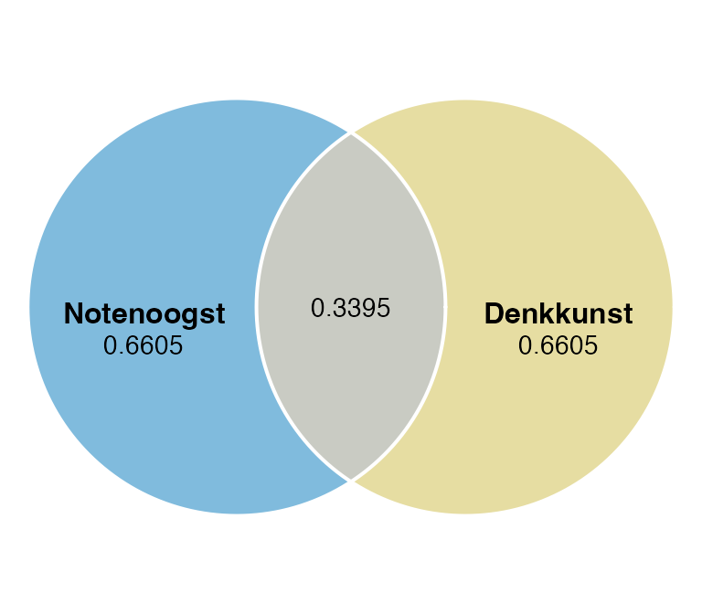
Wat je ziet: de twee cirkels zijn even groot (beide hebben totale variantie \(1\)), en de overlap is \(.3398\). Elke cirkel valt zo uiteen in een niet-gedeeld stuk (\(1 - r^2 = .6602\)) en het gedeelde stuk (\(r^2 = .3398\)) — samen precies \(1\). Met \(r_{\text{notenoogst}, \text{denkkunst}} \approx .5829\) verklaart denkkunst dus ongeveer een derde van de variantie in notenoogst — niet de helft, ook al klinkt \(.58\) als “meer dan half”.
TipCorrelatie is een zijde, \(R^2\) is een oppervlakte
Wat we in een Venn tekenen als “grootte van de overlap” is oppervlakte, niet straal. En oppervlakte is proportioneel aan \(r^2_{X, Y}\) — niet aan \(r_{X, Y}\) zelf. Een correlatie van \(r_{X, Y} = .50\) klinkt als “half”, maar verklaart slechts \(r^2_{X, Y} = .25\) — een kwart van de variantie. Het Venn-diagram laat dat eerlijk zien zolang we de oppervlaktes op \(r^2_{X, Y}\) schalen. Het pakket eulerr doet dat automatisch: je geeft de gewenste oppervlaktes, en het plot ze area-proportional.
Rode draad door dit thema. Correlatie \(r\) = zijde. Verklaarde variantie \(r^2\) = oppervlakte. Eerst kwadrateren, dan optellen. Nooit andersom. Dezelfde regel keert straks terug bij T6/T7 (semipartial² als unieke VAF) en in de discussie of een tabel met zero-order- en semipartial-correlaties bij elkaar mag worden opgeteld (het mag niet — eerst kwadrateren).
WarningTentamenval — \(R^2\) uit een tabel met correlaties
Stel: je krijgt op het tentamen een tabelletje met een zero-order correlatie \(r_{Y, X_1} = .583\) en een semipartial \(r_{Y(X_2 \cdot X_1)} = .206\). Vraag: bereken \(R^2\) van het volledige tweepredictoren-model.
Niet: \(.583 + .206 = .789\). Dat is zijde + zijde — onzin (en niet eens dimensionaal te plaatsen). Wel: \(.583^2 + .206^2 = .340 + .042 = .382\). Eerst kwadrateren, dán optellen. Past binnen \([0, 1]\) en is wat \(R^2\) daadwerkelijk is.
Vuistregel: een correlatie is een zijde, verklaarde variantie is oppervlakte. Optellen mag pas op oppervlakte-niveau — dus pas ná het kwadrateren.
Drie stiekeme controles. Voordat je het model serieus mag nemen, controleer je drie dingen: multicollineariteit (\(1.1.b\)), uitschieters en invloed (\(1.1.c\)), en residual plots (\(1.1.d\)). Eén aanname zit vóór die drie — die check je niet in de data, maar in je studie-opzet.
NoteOnafhankelijkheid van observaties — een ontwerpvraag, geen toets
Lineariteit, homoscedasticiteit en normaliteit kun je in plots checken. Onafhankelijkheid is anders: die zit niet in je data maar in je studieopzet. Het komt neer op één vraag:
“Geeft elke rij in mijn dataset informatie die niet al ergens anders in de tabel zit?”
Schendingen zien er zo uit:
- Herhaalde metingen op dezelfde unit (dezelfde eekhoorn op meerdere dagen, in één regressiemodel zonder unit-aanduiding).
- Clustering: dieren binnen hetzelfde nest, leerlingen binnen dezelfde klas, patiënten binnen dezelfde therapeut.
- Tijdsafhankelijkheid: opeenvolgende observaties die op elkaar lijken (residuen drift, autocorrelatie).
- Spillover: het gedrag van het ene dier beïnvloedt het volgende (dieren die elkaar kunnen zien, samenwerken, beconcurreren).
Heb je herhaalde metingen op dezelfde unit? Dan hoort het thuis in een multilevel-model of repeated-measures ANOVA (thema 6), niet in een gewone MRA. Zit er clustering in (nesten, klassen)? Dan minimaal een random-effects-model overwegen, of robuuste standaardfouten.
In dit hoofdstuk werken we met cross-sectionele dier-data waarin elk dier één rij is en dieren onafhankelijk zijn — dan is de aanname plausibel zonder verdere check. Voor je eigen onderzoek: denk vooraf na over je design, niet achteraf over een toets.
TipVuistregel — onafhankelijkheid is een design-keuze, niet een data-check
Er bestaan formele toetsen (Durbin-Watson voor tijdseries, intraclass-correlatie voor clusters), maar de hoofdvraag los je op bij het ontwerp van je studie: één rij per onafhankelijke unit, geen verborgen geneste structuur. Als je die discipline mist bij het verzamelen, kan geen toets dat achteraf goed maken.
1.1.b Multicollineariteit (VIF)
Of de voorspellers elkaar niet voor de voeten lopen
Soms lijken twee voorspellers zo op elkaar dat ze alleen samen nog iets zeggen, maar geen van beide nog op zichzelf. De VIF variance inflation factor vraagt aan elke voorspeller: “kun jij voorspeld worden door de anderen?” Hoe hoger het antwoord, hoe minder uniek je bent. We schrijven \(\text{VIF}_j\) — een waarde per voorspeller. Tolerance tolerance is zijn spiegel: \(T_j = 1 / \text{VIF}_j\).
Algemene vorm.
# vif() uit het pakket 'car' geeft per voorspeller een getal.
vif(mijn_model)Voor onze dieren.
# VIF per voorspeller. Vuistregel: VIF >= 10 is een probleem.
vif(lm_bos) denkkunst leeftijd zelfgevoel
1.534300 1.201777 1.498978
NoteVraag 1.1
d) Is er sprake van multicollineariteit? Rapporteer de VIF-waarden.
CautionAntwoord 1.1 — open na je eigen poging
In gewone woorden. Multicollineariteit is hier geen probleem. Alle VIF-waarden zitten ruim onder de drempel van \(10\): denkkunst is van de drie het minst uniek (\(\text{VIF}_1 = 1.53\)), maar zelfs dat is licht.
APA-stijl.
Multicollineariteit vormde geen probleem; alle variance inflation factors lagen ruim onder de gebruikelijke drempel van \(10\) (denkkunst: \(\text{VIF}_{1} = 1.53\); leeftijd: \(\text{VIF}_{2} = 1.20\); zelfgevoel: \(\text{VIF}_{3} = 1.50\)).
TipVuistregel
\(\text{VIF}_j < 10\): niets aan de hand. \(\text{VIF}_j \geq 10\): een voorspeller die door de anderen bijna perfect te voorspellen is — terug naar de tekentafel.
T3 — Multicollineariteit zonder R
NoteVraag T3 — Pen-en-papier
Twee voorspellers \(X_1\) en \(X_2\) correleren onderling sterk: \(r_{X_1, X_2} = .92\). Beide hangen evenredig samen met de uitkomst: \(r_{Y, X_1} = r_{Y, X_2} = .50\).
a) Wat verwacht je dat er gebeurt met de \(t\)-toetsen op \(b_1\) en \(b_2\) in een model dat beide voorspellers tegelijk meeneemt?
b) Wat zou er gebeuren als je in plaats daarvan twee aparte enkelvoudige regressies deed (alleen \(X_1\) op \(Y\), en alleen \(X_2\) op \(Y\))?
CautionAntwoord T3 — open na je eigen poging
a) Beide \(t\)-toetsen worden waarschijnlijk niet-significant, ondanks dat elke voorspeller op zichzelf \(r_{Y, X_j} = .50\) heeft. Want: de \(t\)-toets op \(b_j\) in een gezamenlijk model toetst de unieke bijdrage. \(X_1\) en \(X_2\) zeggen bijna hetzelfde (\(r_{X_1, X_2} = .92\)); de unieke toevoeging van elk is daardoor klein, en de standaardfouten worden opgeblazen (\(\text{VIF}\) rond \(1/(1 - .92^2) \approx 6.5\), nog onder de drempel van \(10\), maar duidelijk geïnflateerd).
b) In de twee aparte enkelvoudige regressies is elk verband helder zichtbaar: \(b_1\) en \(b_2\) vertalen netjes uit hun zero-order \(r_{Y, X_j} = .50\) en zijn beide significant.
Nuance. Multicollineariteit verandert de schatting van \(b_j\) niet — die is nog steeds onbevooroordeeld. Wat verandert is de standaardfout: die wordt groter, dus toets-conclusies kunnen omslaan. Een veel gehoorde nuance is dat multicollineariteit in sociale wetenschappen meestal geen praktisch probleem oplevert — alleen bij echt extreme correlaties tussen voorspellers loopt het uit de hand.
1.1.c Uitschieters en invloed
Of er een bedrieger in het lijstje staat
Soms zit er één dier tussen dat het hele model in zijn eentje stuurt. Drie maten samen vertellen je of zo’n dier er is.
- Gestandaardiseerd residu standardized residual vraagt: “hoe ver zit dit dier ervanaf, in standaardafwijkingen?” Boven \(|3|\) wordt het verdacht.
- Cook’s distance vraagt iets diepers: “als ik dit dier weghaal, hoeveel verandert dan het hele model?” Boven \(1\) is een rode vlag.
- Leverage leverage / hefboomwaarde vraagt: “staat dit dier ongewoon ver van de groep, op de voorspellers?” Boven \(3(k+1)/N\) is het ongewoon.
Algemene vorm. Voeg de drie diagnostiek-statistieken als kolommen toe aan je data:
mijn_data$stdres <- rstandard(mijn_model)
mijn_data$leverage <- hatvalues(mijn_model)
mijn_data$cd <- cooks.distance(mijn_model)
# Drempelwaarde leverage: 3 * (k + 1) / N
k <- aantal_voorspellers
N <- nrow(mijn_data)
3 * (k + 1) / N
# Inspecteer min/max/quartielen
summary(mijn_data[, c("stdres", "leverage", "cd")])Voor onze dieren.
# Voeg per dier drie diagnostiek-getallen toe.
bos_dieren$stdres <- rstandard(lm_bos) # gestandaardiseerd residu
bos_dieren$leverage <- hatvalues(lm_bos) # leverage (afstand tot voorspeller-zwaartepunt)
bos_dieren$cd <- cooks.distance(lm_bos) # Cook's distance (totale invloed op het model)
# Drempel voor leverage in dit model: 3 * (k+1) / N met k = 3 voorspellers.
k <- 3
N <- nrow(bos_dieren)
3 * (k + 1) / N[1] 0.1621622# Min/max van de drie statistieken — eerste blik op extremen.
summary(bos_dieren[, c("stdres", "leverage", "cd")]) stdres leverage cd
Min. :-2.82186 Min. :0.01417 Min. :0.0000011
1st Qu.:-0.49079 1st Qu.:0.02416 1st Qu.:0.0011038
Median : 0.14446 Median :0.03227 Median :0.0037505
Mean : 0.01562 Mean :0.05405 Mean :0.1285865
3rd Qu.: 0.75320 3rd Qu.:0.04782 3rd Qu.:0.0136008
Max. : 2.13470 Max. :0.94358 Max. :8.2069366
NoteTidyverse-alternatief
library(dplyr)
bos_dieren <- bos_dieren |>
mutate(
stdres = rstandard(lm_bos),
leverage = hatvalues(lm_bos),
cd = cooks.distance(lm_bos)
)
bos_dieren |>
select(stdres, leverage, cd) |>
summary()
NoteVraag 1.1
e) Wat zeggen de gestandaardiseerde residuen, Cook’s distances en leverage-waarden over uitschieters? Wijzen de drie maten dezelfde kant op?
CautionAntwoord 1.1 — open na je eigen poging
In gewone woorden. Eén dier valt buitengewoon ver uit de toon. De Cook’s distance haalt \(8.21\) — ver boven de drempel van \(1\) — en zijn leverage is \(0.94\), terwijl de drempel hier \(3 \cdot 4 / 74 = 0.16\) is. Tegelijk blijft het gestandaardiseerde residu tussen \(-2.82\) en \(2.13\) (max \(|2.82|\), onder drempel \(|3|\)). De drie maten wijzen dus niet allemaal dezelfde kant op: Cook’s distance en leverage flaggen dit dier, het gestandaardiseerde residu mist hem. Precies waarom je deze drie naast elkaar moet bekijken — een hoge leverage trekt de regressielijn naar de case toe en maakt zijn eigen residu onschuldig.
APA-stijl.
Eén case toonde extreme invloed (Cook’s distance \(= 8.21\)) en zeer hoge leverage (\(0.94\), ten opzichte van een drempelwaarde van \(0.16\)). Het gestandaardiseerde residu van deze case lag binnen aanvaardbare grenzen (\(|z| < 3\)), wat illustreert dat residueel onderzoek alleen onvoldoende is om invloedrijke cases op te sporen wanneer de leverage hoog is.
TipWat de mier opmerkte
“Eén dier kan onschuldig lijken op één maat en gevaarlijk op een andere. Daarom kijken we altijd naar alle drie.”
1.1.d Residual plots
Of de plaatjes vriendelijk zijn
Twee tekeningen zeggen je in één oogopslag of het model klopt: residuen residuals tegen voorspelde waarden fitted values, en de Q-Q-plot.
T9 — Residual-plots herkennen
NoteVraag T9 — Pen-en-papier
Hieronder zie je zes geschetste residual-plots (residu op de y-as, voorspelde waarde op de x-as). Welke patronen herken je?
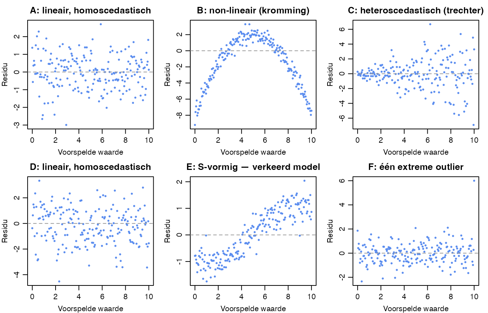
Voor elk paneel: kies één label.
- lineair / homoscedastisch (model klopt)
- non-lineair (kromme structuur — model mist iets)
- heteroscedastisch (waaiert uit — standaardfouten kloppen niet)
- non-lineair én heteroscedastisch (allebei mis)
- één invloedrijke outlier (rest is in orde)
CautionAntwoord T9 — open na je eigen poging
- A — lineair, homoscedastisch. Rustige horizontale wolk rond de nullijn.
- B — non-lineair. Duidelijke omgekeerde-U; het model mist een kromme term.
- C — heteroscedastisch. Trechtervorm: de spreiding groeit met fitted.
- D — lineair, homoscedastisch (alleen meer ruis dan A).
- E — S-vormig residu — verkeerd model. Het echte verband loopt op-en-af in een sigmoid; MRA fit er een rechte lijn doorheen, en wat overblijft zijn residuen die zelf de S-vorm hebben gekopieerd. Dit zie je bij binaire \(Y\) of bij niet-lineaire dosis-respons. In thema 4 (logistische regressie) zien we hoe je dit wél goed modelleert.
- F — lineair, met één extreme outlier rechtsboven.
De diagnostiek bestaat uit twéé gelaagde vragen: patroon (kromming = non-lineariteit) én spreiding (waaiert uit = heteroscedasticiteit). Een plot kan op één of beide vlakken misgaan, of allebei goed zijn. Paneel E is een speciaal geval — niet zomaar een kromming maar precies een sigmoid-overblijfsel; het signaal dat je in plaats van MRA een logistisch model moet gebruiken.
Algemene vorm. plot() op een lm-object kent zes diagnostische tekeningen. Wij gebruiken nummer 1 (lineariteit + homoscedasticiteit) en 2 (normaliteit residuen):
plot(mijn_model, which = 1) # Residuals vs Fitted
plot(mijn_model, which = 2) # Q-Q plotVoor onze dieren.
# Plaatje 1: foutjes tegen voorspelde waarden.
# `sub.caption = ""` haalt de auto-ondertitel met de modelformule weg.
plot(lm_bos, which = 1, sub.caption = "",
caption = "Residuen tegen voorspelde waarden")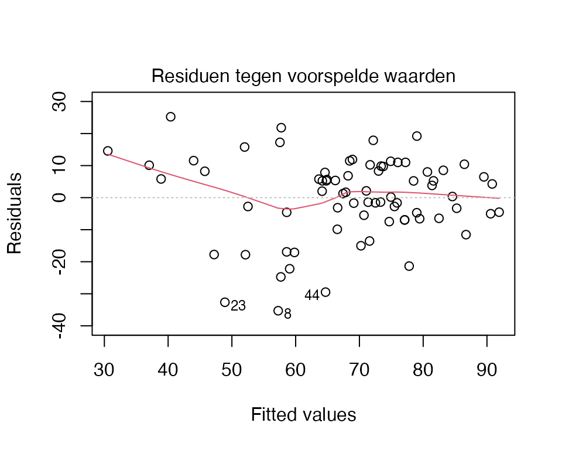
# Plaatje 2: theoretische normaalkwantielen tegen empirische residuen.
plot(lm_bos, which = 2, sub.caption = "",
caption = "Q-Q-plot van residuen")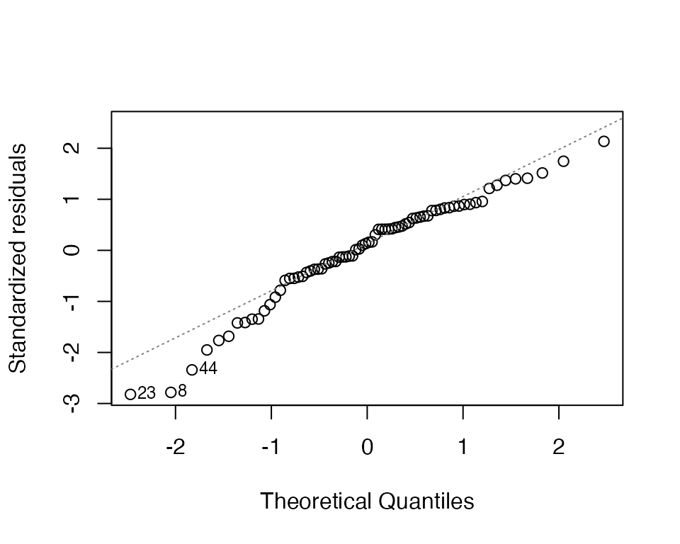
NoteVraag 1.1
f) Zie je tekenen van non-lineariteit, heteroscedasticiteit of niet-normale residuen?
CautionAntwoord 1.1 — open na je eigen poging
In gewone woorden. De Residuals-vs-Fitted-plot toont een redelijk rustige horizontale wolk; geen duidelijke kromming en geen sterke trechtervorm. De Q-Q-plot ligt voor het overgrote deel netjes op de diagonaal, met een zichtbare uitschieter rechts in de staart — dat is dezelfde case die in 1.1.c naar voren kwam. Bij deze steekproefgrootte (\(N = 74\)) is de regressie robuust tegen kleine afwijkingen van normaliteit.
APA-stijl.
Visuele inspectie van de Residuals-vs-Fitted-plot wees niet op systematische non-lineariteit of heteroscedasticiteit. De Q-Q-plot van de residuen volgde de theoretische verdeling op één invloedrijke uitschieter na. Gezien de robuustheid van de \(F\)- en \(t\)-toetsen tegen lichte afwijkingen van normaliteit bij \(N = 74\), werd geen aanvullende correctie toegepast.
TipWat je idealiter ziet
Plaatje 1: een puntenwolk in een rustige horizontale band, met de rode lijn ongeveer plat. Plaatje 2: punten netjes op de schuine lijn.
WarningAlarm: wanneer wordt een geschonden aanname een echt probleem?
Niet elke afwijking is een ramp. De \(F\)- en \(t\)-toetsen zijn redelijk robuust tegen kleine schendingen, vooral bij grotere steekproeven. Bij voldoende \(N\) is \(F\) robuust tegen schendingen van normaliteit (centrale limietstelling). Specifieke vuistregels per groep zijn er niet voor MRA — die zijn voor ANOVA-context (zie thema 2). Maar:
- Duidelijke kromming in de Residuals-vs-Fitted-plot \(\Rightarrow\) het lineaire model klopt niet. Overweeg transformatie (log, kwadraat) of een niet-lineaire term.
- Sterk uitwaaierende trechtervorm \(\Rightarrow\) heteroscedasticiteit. Standaardfouten kloppen niet meer; coëfficiënten zijn onbetrouwbaar getoetst.
- Q-Q-plot met grote afwijkingen in de staarten bij kleine steekproef (\(N < 30\)) \(\Rightarrow\) normaliteit telt nu echt mee.
- \(\text{VIF}_j \geq 10\) voor één of meer voorspellers \(\Rightarrow\) multicollineariteit. Coëfficiënten worden onstabiel.
- Cook’s distance \(> 1\) voor één of meer cases \(\Rightarrow\) invloedrijke punt(en) sturen het model.
1.1.e Interpretatie van het model
Wat zegt het model nu eigenlijk?
Aannames gecheckt, dan mag het model spreken. Eerst over zichzelf — wat verklaart het samen? — en daarna per voorspeller.
Algemene vorm.
summary(mijn_model) # F-toets, R^2, coëfficiënten, t-toetsen
ols_correlations(mijn_model) # zero-order, partial, part per voorspellerIn de summary() staan twee dingen door elkaar: het modelniveau (onderaan: \(F\), \(df\), \(p\), \(R^2\)) en het voorspellerniveau (de coëfficiënten-tabel). De ols_correlations() uit olsrr splitst per voorspeller drie soorten correlatie uit:
- zero-order \(r_{Y, X_j}\) — kale Pearson, geen correctie.
- partial \(r_{Y, X_j \cdot X_{\text{rest}}}\) — gecorrigeerd voor de andere voorspellers, aan beide kanten.
- part / semipartial \(r_{Y(X_j \cdot X_{\text{rest}})}\) — gecorrigeerd alleen aan de X-kant. Het kwadraat ervan is precies de unieke proportie variantie.
WarningVerwarrend! Wat heet wat in de
ols_correlations()-tabel?
De kolomnamen in R en de namen waar wij in MVDA over praten lopen niet netjes parallel. Eén keer goed kijken en het is duidelijk — pas op, want je vergeet het anders weer:
Kolom in R (olsrr) |
Naam in MVDA / NL | Symbool | Waarvoor gebruik je ’m? |
|---|---|---|---|
Zero-order |
gewone correlatie | \(r_{Y, X_j}\) | losse samenhang \(X_j\) ↔︎ \(Y\) |
Partial |
partiële correlatie | \(r_{Y, X_j \cdot X_{\text{rest}}}\) | residuen van \(Y\) en \(X_j\) na uitfilteren van de rest — aan beide kanten gecorrigeerd |
Part |
semipartiële correlatie | \(r_{Y(X_j \cdot X_{\text{rest}})}\) | unieke bijdrage van \(X_j\) — alleen aan \(X\)-kant gecorrigeerd. Dit is de kolom die je in MVDA gebruikt. Kwadrateer hem en je hebt de unieke proportie variantie. |
Onthou: Part = semipartial = onze werkpaard-kolom. Partial lijkt erop te trekken maar is iets anders — een mooie val om op het tentamen in te trappen.
TipHoe lees je een coëfficiënt \(b_j\)?
Drie dingen tegelijk uit één coëfficiënt:
- Teken — positief of negatief? Een positieve \(b_j\) betekent: hoger op deze voorspeller hangt samen met hoger op \(Y\).
- Grootte — hoeveel verandert \(Y\) gemiddeld per één eenheid extra op de voorspeller? Vertaal het naar de inhoud.
- Onder constante andere voorspellers — de stille clausule die altijd geldt in een meervoudige regressie. Wat \(b_j\) je vertelt, geldt voor dieren die op de andere voorspellers vergelijkbaar zijn.
Taligheid — let op causale werkwoorden. Twee formuleringen zijn veilig:
- “Een dier dat één punt hoger scoort op denkkunst, oogst gemiddeld \(0.74\) noten meer” — vergelijking tussen dieren, cross-sectioneel.
- “Een toename van één punt op denkkunst gaat samen met een toename van \(0.74\) in notenoogst” — samenhang, geen oorzaak.
Wat je niet mag zeggen zonder longitudinale of experimentele data: “als denkkunst stijgt, dan stijgt notenoogst”, “meer denkkunst zorgt voor meer notenoogst”, “door denkkunst verhoogt de oogst”. Dat zijn causale werkwoorden — die mag je pas gebruiken als je studie-opzet ze rechtvaardigt (manipulatie, voor-en-na-meting, randomisatie). De bos-data is een momentopname; één meting per dier. Zonder tijd-as is er geen verandering om over te praten.
NoteConcept — \(b_j\) versus \(\beta_j\)
De ruwe regressiecoëfficiënt \(b_j\) leest in de eenheden van \(Y\) en \(X_j\): “per één eenheid extra denkkunst, \(0.74\) noten meer”. Handig inhoudelijk, maar je kunt \(b_1\) en \(b_2\) niet zomaar in grootte met elkaar vergelijken — als \(X_1\) in punten loopt en \(X_2\) in jaren, wat groter is hangt af van toevallige meeteenheden.
De gestandaardiseerde coëfficiënt \(\beta_j\) lost dat op: hij staat in eenheden van standaardafwijking, en is daarmee onderling vergelijkbaar. De vertaling is mooi simpel:
\[ \beta_j = b_j \cdot \frac{s_{X_j}}{s_Y} \]
(In een enkelvoudige regressie geldt zelfs \(\beta = r_{X,Y}\).) Wij gebruiken \(\beta_j\) vooral om voorspellers in belangrijkheid te ordenen; in psychologie staat \(\beta_j\) voor de gestandaardiseerde sample-coëfficiënt.
T4 — Bereken \(b_j\) uit \(\beta_j\) en SDs
NoteVraag T4 — Pen-en-papier
Voor de bos-data zijn de standaardafwijkingen:
| Variabele | \(s\) |
|---|---|
| notenoogst (\(Y\)) | \(18.37\) |
| denkkunst (\(X_1\)) | \(13.83\) |
| leeftijd (\(X_2\)) | \(2.31\) |
| zelfgevoel (\(X_3\)) | \(13.10\) |
De gestandaardiseerde coëfficiënt voor denkkunst (ergens uit een eerdere analyse) is \(\beta_1 = 0.556\).
a) Bereken \(b_1\) uit \(\beta_1\) en de SDs. (Hint: keer de formule om — \(b_j = \beta_j \cdot s_Y / s_{X_j}\).)
b) Voer pas daarna de chunk hieronder uit en vergelijk met de Estimate van denkkunst in summary(lm_bos).
# Modelniveau: F-toets en R-squared. Voorspellerniveau: coëfficiënten + t-toetsen.
summary(lm_bos)
Call:
lm(formula = notenoogst ~ denkkunst + leeftijd + zelfgevoel,
data = bos_dieren)
Residuals:
Min 1Q Median 3Q Max
-35.291 -6.211 1.840 8.471 25.237
Coefficients:
Estimate Std. Error t value Pr(>|t|)
(Intercept) -78.1381 17.8838 -4.369 0.000042353 ***
denkkunst 0.7377 0.1346 5.480 0.000000631 ***
leeftijd 3.3578 0.7120 4.716 0.000011903 ***
zelfgevoel 0.4673 0.1405 3.325 0.00141 **
---
Signif. codes: 0 '***' 0.001 '**' 0.01 '*' 0.05 '.' 0.1 ' ' 1
Residual standard error: 12.85 on 70 degrees of freedom
Multiple R-squared: 0.5311, Adjusted R-squared: 0.5111
F-statistic: 26.43 on 3 and 70 DF, p-value: 0.00000000001525
CautionAntwoord T4 — open na je eigen poging
a) \(b_1 = 0.556 \cdot 18.37 / 13.83 = 0.738\).
b) In summary(lm_bos) staat \(b_1 = 0.7377\). Komt overeen (afrondverschillen in de derde decimaal). Het laat zien dat \(b\) en \(\beta\) gewoon andere uitdrukkingen van hetzelfde verband zijn — geen aparte schatting, alleen een herschaling.
TipSudoku met je regressietabel — SS, MS, F en RSE uit
summary() halen
summary(lm_bos) print \(R^2\), de \(F\)-toets, en de coëfficiënten — maar de kwadratensommen (\(SS_T\), \(SS_M\), \(SS_E\)) staan er niet expliciet in. Geen ramp: een paar identiteiten en je rekent de hele tabel zelf uit. Dit is de sudoku van de regressietabel — drie cellen weg, vier optellingen en delingen, alles erin.
De keten (df = vrijheidsgraden):
| Cel | Formule | Voor het bos-model |
|---|---|---|
| \(SS_T\) | \(s^2_Y \cdot (N - 1)\) | \(18.37^2 \cdot 73 = 24{,}625\) |
| \(SS_M\) | \(R^2 \cdot SS_T\) | \(.5311 \cdot 24{,}625 = 13{,}079\) |
| \(SS_E\) | \(SS_T - SS_M\) | \(24{,}625 - 13{,}079 = 11{,}546\) |
| \(df_M\) | \(p\) (aantal voorspellers) | \(3\) |
| \(df_E\) | \(N - p - 1\) | \(74 - 3 - 1 = 70\) |
| \(df_T\) | \(N - 1\) | \(73\) |
| \(MS_M\) | \(SS_M / df_M\) | \(13{,}079 / 3 = 4{,}360\) |
| \(MS_E\) | \(SS_E / df_E\) | \(11{,}546 / 70 = 164.9\) |
| \(F\) | \(MS_M / MS_E\) | \(4{,}360 / 164.9 = 26.4\) ✓ |
| \(RSE\) | \(\sqrt{MS_E}\) | \(\sqrt{164.9} = 12.84\) ✓ |
In R kun je ze ook direct trekken — geen kunststuk, maar wel handig om te zien:
SS_T <- var(bos_dieren$notenoogst) * (NROW(bos_dieren) - 1)
SS_M <- summary(lm_bos)$r.squared * SS_T
SS_E <- SS_T - SS_M
df_E <- df.residual(lm_bos)
MS_E <- SS_E / df_E
sqrt(MS_E) # zelfde getal als "Residual standard error" in summary()Hetzelfde kun je ook één-op-één uit anova(lm_bos) lezen (let op: type I SS) of uit car::Anova(lm_bos, type = "II") voor type II SS. Voor MRA met alleen continue voorspellers maakt het type meestal weinig uit — bij ANOVA-thema’s straks wél.
Waarom doet het ertoe? Je tentamen krijgt vaak een halve tabel, of een tekst met “de F-toets was 26.4 op (3, 70) — bereken \(R^2\)”. Wie de identiteiten kent, vult de sudoku-cellen in en hoeft niets uit het hoofd te leren.
# Drie soorten correlatie per voorspeller.
ols_correlations(lm_bos) Correlations
--------------------------------------------
Variable Zero Order Partial Part
--------------------------------------------
denkkunst 0.583 0.548 0.448
leeftijd 0.099 0.491 0.386
zelfgevoel 0.496 0.369 0.272
--------------------------------------------Semipartial in beeld — drie cirkels
Wat is “uniek” en wat is “gedeeld”?
Met twee voorspellers tegelijk wordt het Venn pas echt nuttig. Hieronder een voorbeeld met denkkunst en zelfgevoel als voorspellers van notenoogst (leeftijd even buiten beeld voor leesbaarheid). Het tweepredictoren-model verklaart \(R^2_{Y \cdot 12} = .3822\).
Toon code (illustratie, niet tentamen-stof)
# Tweepredictoren-model — eerst de bouwstenen als variabelen, daarna de tekening.
lm_2pred <- lm(notenoogst ~ denkkunst + zelfgevoel, data = bos_dieren)
R2_total <- round(summary(lm_2pred)$r.squared, 4) # = .3822
sr2_d <- round(ols_correlations(lm_2pred)$Part[1]^2, 4) # uniek denkkunst = .1361
sr2_z <- round(ols_correlations(lm_2pred)$Part[2]^2, 4) # uniek zelfgevoel = .0424
shared <- round(R2_total - sr2_d - sr2_z, 4) # gedeeld in Y = .2037
# X-X-overlap buiten Y: r(denkkunst, zelfgevoel)^2 minus de gedeelde variantie in Y.
r_dz <- cor(bos_dieren$denkkunst, bos_dieren$zelfgevoel)
xx_buiten <- round(r_dz^2 - shared, 4) # = .1071
fit3 <- euler(c(
"Notenoogst" = 1 - R2_total, # Y zonder X-overlap
"Denkkunst" = 0.55, # denkkunst zonder Y, zonder zelfgevoel
"Zelfgevoel" = 0.65, # zelfgevoel zonder Y, zonder denkkunst
"Notenoogst&Denkkunst" = sr2_d, # uniek door denkkunst (in Y)
"Notenoogst&Zelfgevoel" = sr2_z, # uniek door zelfgevoel (in Y)
"Denkkunst&Zelfgevoel" = xx_buiten, # X-X overlap buiten Y
"Notenoogst&Denkkunst&Zelfgevoel" = shared # gedeeld door beide (in Y) = R2 - sr2_d - sr2_z
))
plot(fit3,
fills = list(fill = c("#0077BB", "#CCBB44", "#EE7733"), alpha = 0.45),
labels = list(col = "black", font = 2),
quantities = list(type = "counts", cex = 0.8),
edges = list(col = "white", lwd = 2))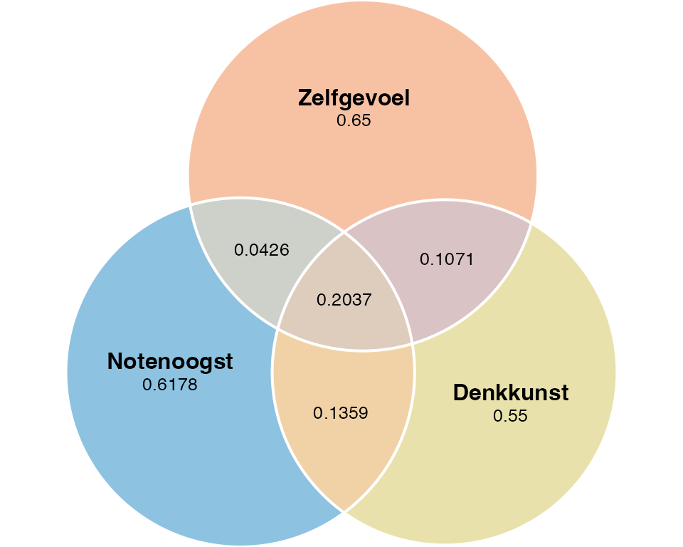
Wat je ziet binnen de notenoogst-cirkel: drie verschillende stukken. Het kleine maantje aan de denkkunst-kant (\(.1361\)) is de gekwadrateerde semipartial \(r^2_{Y(X_1 \cdot X_2)}\) — wat denkkunst uniek toevoegt boven zelfgevoel. Hetzelfde aan de zelfgevoel-kant (\(.0424\)). Het grote middelste segment (\(.2037\)) is de gedeelde verklaring: notenoogst-variantie die beide voorspellers tegelijk verklaren. Zonder gedeelde variantie zouden de twee unieke stukken gewoon optellen tot \(R^2\); mét gedeelde variantie is \(R^2\) groter dan de som van de unieke stukken alleen.
NoteVragen 1.1
g) Kan de nul “geen samenhang tussen notenoogst en de drie voorspellers samen” verworpen worden? Rapporteer \(F\), \(df\) en \(p\). Schrijf \(H_0\) voluit op in een hele zin — en geef expliciet aan of die uitspraak over je \(74\) dieren in de steekproef gaat of over de hele dierenpopulatie waaruit ze komen.
h) Wat is de geschatte regressievergelijking? Vertel in woorden wat elke coëfficiënt betekent. Is de intercept (\(b_0\)) inhoudelijk zinvol, of beschrijft hij een onmogelijk dier?
T5 — Voorspelling met de hand
NoteVraag T5 — Pen-en-papier
Stel je een dier voor met de volgende waarden:
- denkkunst \(= 110\)
- leeftijd \(= 12\)
- zelfgevoel \(= 60\)
a) Schrijf de regressievergelijking op (hint: kijk naar de Estimate-kolom in summary(lm_bos)): \[
\widehat{\text{notenoogst}} = b_0 + b_1 \cdot \text{denkkunst} + b_2 \cdot \text{leeftijd} + b_3 \cdot \text{zelfgevoel}
\]
b) Bereken \(\widehat{\text{notenoogst}}\) voor dit dier.
c) Lijkt dat een aannemelijk getal vergeleken met de verdeling van notenoogst (range ongeveer \(16\)–\(98\), gemiddelde rond \(69\))?
CautionAntwoord T5 — open na je eigen poging
a) Uit summary(lm_bos): \(b_0 = -78.14\), \(b_1 = 0.7377\), \(b_2 = 3.358\), \(b_3 = 0.4673\).
b) \[ \widehat{\text{notenoogst}} = -78.14 + 0.7377 \cdot 110 + 3.358 \cdot 12 + 0.4673 \cdot 60 = 71.34 \]
c) Ja: \(71.3\) noten ligt boven het gemiddelde maar binnen het bereik. Plausibel voor een dier met bovengemiddelde denkkunst, gemiddelde leeftijd en bovengemiddeld zelfgevoel.
NoteVragen 1.1 — vervolg
i) Welke voorspellers zijn significant, welke niet? Rapporteer test-statistic, \(df\) en \(p\) per voorspeller.
j) Hoeveel variantie van notenoogst verklaart het hele model?
k) Hoeveel variantie verklaart elke voorspeller uniek? (tip: kwadrateer de Part-correlatie uit ols_correlations()).
l) Welke voorspeller verklaart de meeste unieke variantie?
CautionAntwoord 1.1 — open na je eigen poging
In gewone woorden. Het hele model voorspelt notenoogst zeer significant (\(F(3, 70) = 26.43\), \(p < .001\)).
De \(H_0\) voluit (g). In de populatie dieren waaruit deze 74 dieren een steekproef zijn, hangen denkkunst, leeftijd en zelfgevoel niet samen met notenoogst: \(H_0: b^*_1 = b^*_2 = b^*_3 = 0\). De ster (\(^*\)) maakt zichtbaar dat het over de populatie-coëfficiënten gaat, niet over de geschatte coëfficiënten van deze 74 dieren. Een nulhypothese gáát over de populatie — anders zou je ’m met je eigen steekproef gewoon kunnen aflezen, en is er niets te toetsen. Met \(F(3, 70) = 26.43\), \(p < .001\) verwerpen we \(H_0\): de drie voorspellers verklaren samen significant variantie in notenoogst in de populatie.
De geschatte vergelijking is
\[\widehat{\text{notenoogst}} = -78.14 + 0.74\,\text{denkkunst} + 3.36\,\text{leeftijd} + 0.47\,\text{zelfgevoel}\]
De intercept (\(-78.14\)) is de voorspelde notenoogst als alle voorspellers nul zouden zijn — een dier met denkkunst \(= 0\), leeftijd \(= 0\) jaar (pasgeboren) en zelfgevoel \(= 0\). Geen enkel dier in de bos-data zit ook maar in de buurt. Extrapolatie buiten je data-bereik, inhoudelijk niet zinvol — maar mathematisch nodig om de regressielijn op de juiste hoogte te krijgen. Alle drie de coëfficiënten zijn positief, en moeten elk gelezen worden bij dieren die op de andere twee voorspellers vergelijkbaar zijn:
- Een dier dat één punt slimmer denkt, oogst gemiddeld \(0.74\) noten meer.
- Een dier dat één jaar ouder is, oogst \(3.36\) noten meer.
- Een dier met één punt meer zelfgevoel, oogst \(0.47\) noten meer (g, h).
Alle drie de voorspellers zijn afzonderlijk significant: denkkunst \(t(70) = 5.48\), \(p < .001\); leeftijd \(t(70) = 4.72\), \(p < .001\); zelfgevoel \(t(70) = 3.33\), \(p = .001\) (i).
Het model verklaart \(R^2 = .53\) — drieënvijftig procent van de variantie (j). De unieke proporties (kwadraat van de Part-correlaties): denkkunst \(.448^2 = .20\) (\(\sim 20\%\)), leeftijd \(.386^2 = .15\) (\(\sim 15\%\)), zelfgevoel \(.272^2 = .07\) (\(\sim 7\%\)) (k). Denkkunst verklaart de meeste unieke variantie (l).
APA-stijl.
Een meervoudige regressieanalyse met denkkunst, leeftijd en zelfgevoel als voorspellers van notenoogst was statistisch significant, \(F(3, 70) = 26.43\), \(p < .001\), \(R^2 = .53\) (VAF \(= 53\%\)). Alle drie de voorspellers droegen uniek en positief bij. Bij dieren die op de andere twee voorspellers vergelijkbaar waren, hing een hogere denkkunst samen met een grotere notenoogst, \(b_{1} = 0.74\), \(t(70) = 5.48\), \(p < .001\), \(r^{2}_{Y(X_1 \cdot X_2 X_3)} = .20\). Hetzelfde positieve patroon gold voor leeftijd, \(b_{2} = 3.36\), \(t(70) = 4.72\), \(p < .001\), \(r^{2}_{Y(X_2 \cdot X_1 X_3)} = .15\), en voor zelfgevoel, \(b_{3} = 0.47\), \(t(70) = 3.33\), \(p = .001\), \(r^{2}_{Y(X_3 \cdot X_1 X_2)} = .07\). Denkkunst leverde de sterkste unieke bijdrage.
T6 — Unieke VAF handmatig
NoteVraag T6 — Pen-en-papier
Uit ols_correlations(lm_bos) lees je de Part-correlaties (semipartials) af:
| Voorspeller | Part \(r_{Y(X_j \cdot \text{rest})}\) |
|---|---|
| denkkunst | \(.448\) |
| leeftijd | \(.386\) |
| zelfgevoel | \(.272\) |
a) Kwadrateer elke Part-correlatie en sommeer ze: dat is de totale unieke verklaarde variantie.
b) Vergelijk met \(R^2 = .531\). Hoe zit het verschil (\(R^2 - \sum r^2_{\text{part}}\)) eruit, en wat is dat?
CautionAntwoord T6 — open na je eigen poging
a) \(.448^2 + .386^2 + .272^2 = .201 + .149 + .074 = .424\).
b) \(R^2 - \sum r^2_{\text{part}} = .531 - .424 = .107\). Dat verschil (\(\approx 11\%\)) is gedeelde variantie: variantie in notenoogst die door meerdere voorspellers tegelijk verklaard wordt en daardoor in geen enkele unieke part-correlatie zit. De som van unieke parts is dus altijd \(\leq R^2\); het ontbrekende stukje is overlap.
T7 — Venn-diagram met vier cirkels
NoteVraag T7 — Pen-en-papier
Teken een Venn-diagram met vier cirkels: de notenoogst-cirkel (\(Y\)) en drie voorspeller-cirkels (\(X_1\) = denkkunst, \(X_2\) = leeftijd, \(X_3\) = zelfgevoel).
Markeer in jouw tekening:
a) De totale verklaarde variantie van notenoogst — dat is alle overlap met \(Y\) samen.
b) Het unieke deel van elke voorspeller — overlap met \(Y\) die geen enkele andere voorspeller deelt.
c) De gedeelde delen — overlap met \(Y\) waar twee of drie voorspellers in zitten.
Gebruik de getallen uit T6 (\(.2011\), \(.1490\), \(.0741\) uniek; \(\sim .1070\) gedeeld; totaal \(.5311\)) om de cirkels in verhouding te tekenen.
CautionAntwoord T7 — open na je eigen poging
Een correct Venn-diagram heeft drie X-cirkels die elkaar deels overlappen, en een Y-cirkel die met elk van hen overlapt. Wat in jouw tekening klopt:
- Totaal \(= R^2 = .5311\) — al het Y-gebied dat in enige X-cirkel zit.
- Uniek per voorspeller — Y-gebied dat alleen in die ene X zit, niet in de andere: denkkunst \(.2011\), leeftijd \(.1490\), zelfgevoel \(.0741\). Samen \(.4241\).
- Gedeeld — Y-gebied in twee of drie X’en tegelijk: \(.5311 - .4241 = .1070\).
Een referentie-tekening (vier cirkels: notenoogst \(+\) drie voorspellers) — eulerr plaatst zelf ellipsen waar cirkels niet meer alle relaties kunnen weergeven:
Toon code (illustratie, niet tentamen-stof)
library(eulerr)
# Bouwstenen uit T6: kwadraat van de Part-correlaties = unieke VAF per voorspeller.
R2_total <- round(summary(lm_bos)$r.squared, 4) # = .5311
sr2_d <- round(ols_correlations(lm_bos)$Part[1]^2, 4) # denkkunst, uniek = .2011
sr2_l <- round(ols_correlations(lm_bos)$Part[2]^2, 4) # leeftijd, uniek = .1490
sr2_z <- round(ols_correlations(lm_bos)$Part[3]^2, 4) # zelfgevoel, uniek = .0741
shared <- round(R2_total - sr2_d - sr2_l - sr2_z, 4) # totaal gedeeld in Y = .1070
fit4 <- euler(c(
"Notenoogst" = 1 - R2_total, # Y_only = 1 - R^2
"Denkkunst" = 0.5000,
"Leeftijd" = 0.5500,
"Zelfgevoel" = 0.5500,
"Notenoogst&Denkkunst" = sr2_d, # uniek door denkkunst
"Notenoogst&Leeftijd" = sr2_l, # uniek door leeftijd
"Notenoogst&Zelfgevoel" = sr2_z, # uniek door zelfgevoel
"Denkkunst&Leeftijd" = 0.0500,
"Denkkunst&Zelfgevoel" = 0.2000, # X-X overlap (sterkste: r=.56)
"Leeftijd&Zelfgevoel" = 0.0500,
# De vier gedeelde stukken (twee- en drievoudig in Y) tellen samen op tot `shared`.
# We verdelen ze hier indicatief — eulerr zoekt zelf het beste compromis.
"Notenoogst&Denkkunst&Leeftijd" = 0.0200,
"Notenoogst&Denkkunst&Zelfgevoel" = 0.0700, # grootste gedeelde stuk in Y
"Notenoogst&Leeftijd&Zelfgevoel" = 0.0100,
"Notenoogst&Denkkunst&Leeftijd&Zelfgevoel" = shared - 0.0200 - 0.0700 - 0.0100
))
plot(fit4,
fills = list(fill = c("#0077BB", "#CCBB44", "#33BBEE", "#EE7733"), alpha = 0.40),
labels = list(col = "black", font = 2, cex = 0.85),
quantities = list(type = "counts", cex = 0.7),
edges = list(col = "white", lwd = 1.5))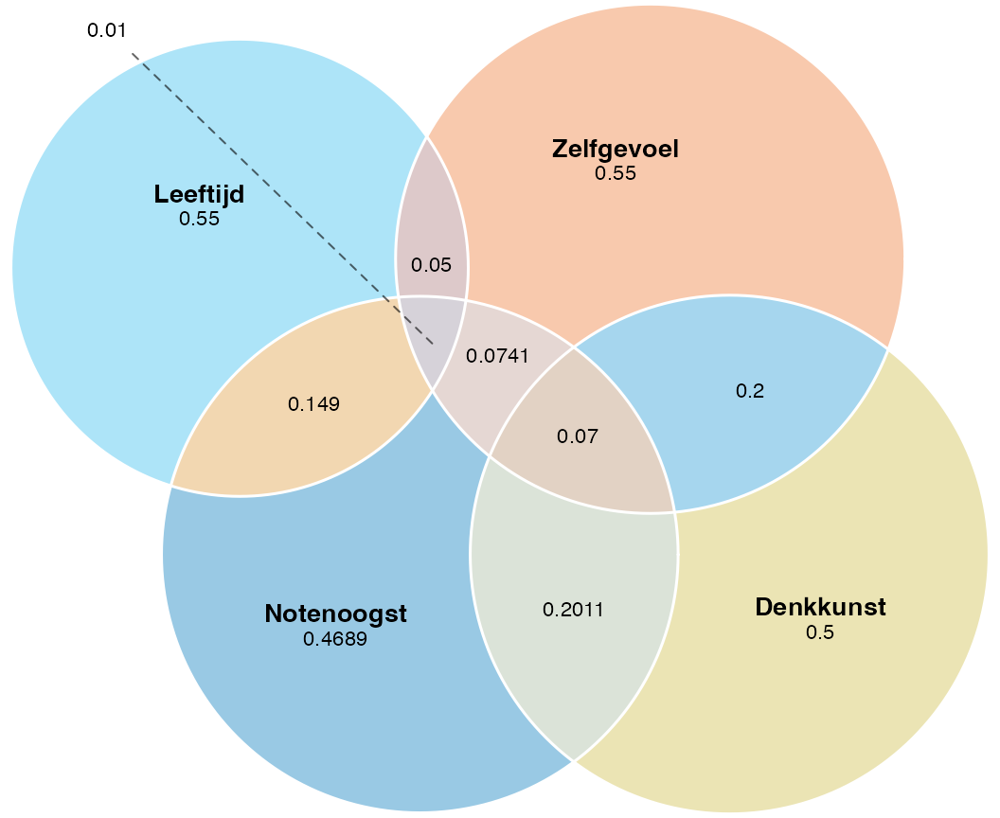
De getekende oppervlaktes wijken licht af van de exacte gewenste waarden — eulerr zoekt het beste compromis als niet alle relaties tegelijk in een platte tekening passen. Inhoudelijk klopt de boodschap: drie unieke maantjes binnen \(Y\) van afnemende grootte (\(.2011 > .1490 > .0741\)), en daartussen een gedeeld middelpunt waar verklaringen elkaar overlappen.
Nuance. Aannames-schendingen veranderen de schatting van \(b_j\) (en dus de oppervlakten in jouw Venn) niet — die blijft onbevooroordeeld. Wat schendingen wél veranderen zijn de standaardfouten rondom die schattingen. Conclusies over significantie kunnen dus fout uitvallen, terwijl de getekende Venn op zich klopt.
T8 — Decompositie via twee paden
NoteVraag T8 — Pen-en-papier (vervlochten)
Een ander pad om \(R^2\) op te bouwen is sequentieel: eerst de zero-order verklaring van één voorspeller, daarna de unieke toevoeging van de volgende.
Voor twee voorspellers (denkkunst en leeftijd, met zelfgevoel even buiten beschouwing) zou er moeten gelden:
\[ R^2_{Y, X_1 X_2} = r^2_{Y, X_1} + r^2_{Y(X_2 \cdot X_1)} \]
waarbij het tweede stuk de gekwadrateerde semipartial is — wat \(X_2\) uniek toevoegt na \(X_1\).
a) Spiegel ook geldt: \[ R^2_{Y, X_1 X_2} = r^2_{Y, X_2} + r^2_{Y(X_1 \cdot X_2)} \] Beide kanten moeten hetzelfde \(R^2\) opleveren. Toets dit met de chunk hieronder.
b) Voer de chunk uit: hij schat het tweepredictoren-model en print de twee paden.
Toon code (illustratie, niet tentamen-stof)
m12 <- lm(notenoogst ~ denkkunst + leeftijd, data = bos_dieren)
# Totaal R^2 van het tweepredictoren-model
r2_totaal <- summary(m12)$r.squared
# Pad 1: zero-order denkkunst + semipartial leeftijd | denkkunst
sp_lt <- ols_correlations(m12)$Part[2]
pad_1 <- cor(bos_dieren$notenoogst, bos_dieren$denkkunst)^2 + sp_lt^2
# Pad 2: zero-order leeftijd + semipartial denkkunst | leeftijd
sp_dk <- ols_correlations(m12)$Part[1]
pad_2 <- cor(bos_dieren$notenoogst, bos_dieren$leeftijd)^2 + sp_dk^2
c(R2_totaal = r2_totaal, pad_1 = pad_1, pad_2 = pad_2)R2_totaal pad_1 pad_2
0.4570886 0.4570886 0.4570886
CautionAntwoord T8 — open na je eigen poging
Beide paden landen op hetzelfde \(R^2\) (op afrondverschillen na). Dat is geen toeval: de decompositie van verklaarde variantie kan langs verschillende routes, maar de eindbestemming ligt vast.
Inhoudelijk: zero-order \(r_{Y, X_1}\) omvat alles wat \(X_1\) verklaart inclusief eventuele overlap met \(X_2\). De semipartial \(r_{Y(X_2 \cdot X_1)}\) vult dan precies aan met wat \(X_2\) uniek toevoegt — geen dubbeltelling. Hetzelfde langs de andere route. De totale taart is even groot; je kunt hem alleen anders snijden.
TipWat de eekhoorn over de Part-kolom zei
“De Part-correlatie is de eerlijkste maat van wie wat doet. Hij vraagt: hoeveel van de notenoogst verklaart juist déze voorspeller, ná aftrek van wat de anderen al deden? Het kwadraat ervan is precies de unieke proportie variantie.”
1.2 Modelaanpassing na verwijdering van een invloedspunt
De vergeten case
Een paar dagen later kwam de mier weer langs. “Eekhoorn, ik denk dat er een dier in onze gegevens staat dat er eigenlijk niet hoort. De onderzoeker zelf had ooit de vragenlijst ingevuld om hem uit te proberen, en vergat zijn eigen score eruit te halen.”
In onderzoek mag je niet zomaar uitschieters weghalen — maar als de reden buiten je hypothese ligt, mag het soms.
ImportantDon’t: uitschieters weghalen omdat ze niet bevallen
Een uitschieter weghalen is een morele beslissing, niet alleen een statistische.
- Niet doen: een case verwijderen omdat hij je hypothese tegenwerkt, of omdat je \(p\)-waarde net niet onder \(.05\) uitkomt. Dat is p-hacking.
- Niet doen: alle cases met \(|stdres| > 3\) blind verwijderen.
- Mag wel: een case verwijderen om een reden die buiten je hypothese ligt — meetfout, dataregistratiefout, of (zoals hier) een proefonderwerp dat niet in de populatie thuishoort.
- Verplicht erbij: in je verslag expliciet melden welke case je hebt verwijderd, waarom, en wat het effect was. Niet stilletjes.
NoteWaarom Cook’s distance, niet alleen stdres
De vergeten case heeft een gestandaardiseerd residu dat onschuldig lijkt. Hoe kan dat? Omdat hij zoveel leverage heeft dat de regressielijn naar hém toe getrokken is. Pas Cook’s distance — die residu en leverage combineert — onthult zijn invloed.
Algemene vorm.
# Welke cases hebben extreme invloed?
boosdoener_idx <- which(mijn_data$cd > 1)
# Wat staat er in die regeltjes?
mijn_data[boosdoener_idx, ]
# Schat het model opnieuw, zonder de uitschieter(s)
mijn_data_schoon <- mijn_data[-boosdoener_idx, ]
mijn_model_schoon <- lm(Y ~ X1 + X2 + X3, data = mijn_data_schoon)
summary(mijn_model_schoon)
ols_correlations(mijn_model_schoon)mijn_data[i, ] betekent: pak rij i, alle kolommen. Met [-boosdoener_idx, ] doe je het omgekeerde — alle rijen behálve die. De komma is essentieel.
Voor onze dieren.
# Welk dier heeft een Cook's distance boven 1?
boosdoener_idx <- which(bos_dieren$cd > 1)
boosdoener_idx[1] 18# Bekijk dat dier: welke scores maken hem afwijkend?
bos_dieren[boosdoener_idx, ] notenoogst denkkunst leeftijd zelfgevoel stdres leverage cd
18 95.1 74 31 22 1.401004 0.9435821 8.206937# Het lijstje zonder de vergeten case.
bos_dieren_schoon <- bos_dieren[-boosdoener_idx, ]
# De mier rekent opnieuw.
lm_bos_schoon <- lm(notenoogst ~ denkkunst + leeftijd + zelfgevoel,
data = bos_dieren_schoon)
summary(lm_bos_schoon)
Call:
lm(formula = notenoogst ~ denkkunst + leeftijd + zelfgevoel,
data = bos_dieren_schoon)
Residuals:
Min 1Q Median 3Q Max
-35.003 -6.321 1.351 9.371 24.232
Coefficients:
Estimate Std. Error t value Pr(>|t|)
(Intercept) -28.3021 39.5355 -0.716 0.4765
denkkunst 0.6831 0.1392 4.909 0.00000589 ***
leeftijd -0.4317 2.7774 -0.155 0.8769
zelfgevoel 0.4757 0.1397 3.406 0.0011 **
---
Signif. codes: 0 '***' 0.001 '**' 0.01 '*' 0.05 '.' 0.1 ' ' 1
Residual standard error: 12.76 on 69 degrees of freedom
Multiple R-squared: 0.5307, Adjusted R-squared: 0.5103
F-statistic: 26.01 on 3 and 69 DF, p-value: 0.00000000002287ols_correlations(lm_bos_schoon) Correlations
---------------------------------------------
Variable Zero Order Partial Part
---------------------------------------------
denkkunst 0.672 0.509 0.405
leeftijd -0.265 -0.019 -0.013
zelfgevoel 0.586 0.379 0.281
---------------------------------------------Vergelijk de output met die van lm_bos. Wat verandert? \(R^2\)? De individuele coëfficiënten? De significantie?
NoteTidyverse-alternatief
library(dplyr)
bos_dieren |> slice(boosdoener_idx)
bos_dieren_schoon <- bos_dieren |> slice(-boosdoener_idx)
NoteVragen 1.2
a) Welk dier is verwijderd? Wat zie je aan zijn scores dat hem afwijkend maakt?
b) Wat verandert er aan \(R^2\) en de individuele coëfficiënten zonder hem?
c) Welke conclusie zou je rapporteren — mét of zonder hem? En waarom?
CautionAntwoord 1.2 — open na je eigen poging
In gewone woorden.
Eén case (rij 18) is verwijderd. Zijn scores: notenoogst \(= 95.1\), denkkunst \(= 74\), leeftijd \(= 31\), zelfgevoel \(= 22\). Leeftijd \(31\) ligt ver boven het bereik van de andere dieren (\(11\)–\(13\)), en de combinatie van een hoge notenoogst met lage denkkunst en zeer laag zelfgevoel past bij geen van de andere patronen.
De verklaarde variantie verandert nauwelijks (\(R^2 = .53\) blijft \(.53\)), maar in de afzonderlijke coëfficiënten gebeurt iets opvallends: leeftijd valt weg als significante voorspeller (\(t(69) = -0.16\), \(p = .88\)), en het teken van \(b_2\) flipt zelfs van positief (\(+3.36\)) naar nipt negatief (\(-0.43\)). Denkkunst en zelfgevoel blijven overeind, beide nog steeds met een positief verband.
De juiste conclusie is die zonder de boosdoener: leeftijd voorspelt notenoogst niet, alleen denkkunst en zelfgevoel doen dat. Verwijderen mag hier omdat de reden buiten de hypothese ligt: de vergeten testscore van de onderzoeker zelf, geen echt dier.
APA-stijl.
Eén invloedrijke case werd op grond van Cook’s distance (\(= 8.21\)) en bekende meetfout uit de analyse verwijderd. Het gecorrigeerde model bleef statistisch significant, \(F(3, 69) = 26.01\), \(p < .001\), \(R^2 = .53\). Bij dieren die op de andere voorspellers vergelijkbaar waren, hingen een hogere denkkunst, \(b_{1} = 0.68\), \(t(69) = 4.91\), \(p < .001\), \(r^{2}_{Y(X_1 \cdot X_2 X_3)} = .16\), en een hoger zelfgevoel, \(b_{3} = 0.48\), \(t(69) = 3.41\), \(p = .001\), \(r^{2}_{Y(X_3 \cdot X_1 X_2)} = .08\), beide positief samen met een hogere notenoogst. Het oorspronkelijke positieve effect van leeftijd was niet langer aanwezig, \(b_{2} = -0.43\), \(t(69) = -0.16\), \(p = .88\), en kon volledig worden toegeschreven aan de invloed van de verwijderde case.
1.A Hiërarchische regressie-analyse
Het zelfvertrouwen van de schildpad
De schildpad zat aan de rand van de vijver en dacht na. Hij dacht na over de vraag of hij wel echt geloofde dat hij iets kon. Lag het aan zijn leeftijd? Aan hoe hij over zichzelf dacht? Of misschien aan hoe vaak hij zich zorgen maakte? Of aan hoe vrolijk hij was?
In een groter onderzoek vroegen onderzoekers aan honderdzevenentachtig dieren hoeveel zelfvertrouwen ze hadden, hoe oud ze waren, of ze het gevoel hadden zelf aan het roer te staan (stuurgevoel), hoe vaak ze tobberden (tobberigheid), en hoe uitbundig ze in het bos rondliepen (uitbundigheid).
Algemene vorm. Hiërarchische regressie hierarchical regression betekent: je bouwt het model laag voor laag op, op grond van wat de theorie zegt. Per laag gebruik je anova(model_klein, model_groter) om te toetsen of de extra voorspellers iets toevoegen — een modelvergelijking model comparison.
m1 <- lm(Y ~ X1, data = mijn_data)
m2 <- lm(Y ~ X1 + X2, data = mijn_data)
m3 <- lm(Y ~ X1 + X2 + X3 + X4, data = mijn_data)
anova(m1, m2) # voegt X2 iets toe?
anova(m2, m3) # voegen X3 en X4 samen iets toe?Voor onze dieren.
# Tweede dataset: ~187 dieren bij de vijver, vijf variabelen per dier.
load("data/zelfvertrouwen_van_de_schildpad.RData")
# Wat zit erin?
str(vijver_dieren)'data.frame': 187 obs. of 5 variables:
$ zelfvertrouwen: num 8.97 6.02 4.39 8.4 6.44 ...
$ leeftijd : num 51 60 53 56 49 46 58 45 52 53 ...
$ stuurgevoel : num 8.49 6 4.98 6.59 7.38 ...
$ tobberigheid : num 9.51 5.46 6.62 8.8 7.46 ...
$ uitbundigheid : num 3.81 5.1 3.97 5.81 5.94 ...Stap 1 Enkelvoudig regressiemodel
Alleen stuurgevoel
m1 <- lm(zelfvertrouwen ~ stuurgevoel, data = vijver_dieren)
summary(m1)
Call:
lm(formula = zelfvertrouwen ~ stuurgevoel, data = vijver_dieren)
Residuals:
Min 1Q Median 3Q Max
-4.914 -1.079 0.213 1.175 3.555
Coefficients:
Estimate Std. Error t value Pr(>|t|)
(Intercept) 2.48954 0.53621 4.643 6.50e-06 ***
stuurgevoel 0.77044 0.08856 8.700 1.79e-15 ***
---
Signif. codes: 0 '***' 0.001 '**' 0.01 '*' 0.05 '.' 0.1 ' ' 1
Residual standard error: 1.579 on 185 degrees of freedom
Multiple R-squared: 0.2903, Adjusted R-squared: 0.2865
F-statistic: 75.69 on 1 and 185 DF, p-value: 1.788e-15
NoteVragen 1.A — stap 1
a) Kan de nul “geen samenhang tussen zelfvertrouwen en stuurgevoel” verworpen worden? Rapporteer \(F\), \(df\) en \(p\).
b) Wat is de regressievergelijking?
c) Hoeveel variantie van zelfvertrouwen verklaart stuurgevoel?
CautionAntwoord 1.A — open na je eigen poging
In gewone woorden.
Stuurgevoel voorspelt zelfvertrouwen ruimschoots significant: \(F(1, 185) = 75.69\), \(p < .001\).
De vergelijking is \(\widehat{\text{zelfvertrouwen}} = 2.49 + 0.77 \cdot \text{stuurgevoel}\). Per punt stuurgevoel ongeveer \(0.77\) punt zelfvertrouwen erbij.
Het verklaart \(R^2 = .29\).
APA-stijl.
Stuurgevoel hing positief samen met zelfvertrouwen: dieren met een hoger stuurgevoel rapporteerden gemiddeld meer zelfvertrouwen, \(F(1, 185) = 75.69\), \(p < .001\), \(R^2 = .29\). De geschatte regressievergelijking was \(\widehat{\text{zelfvertrouwen}} = 2.49 + 0.77 \cdot \text{stuurgevoel}\), \(b_{1} = 0.77\), \(SE = 0.09\), \(t(185) = 8.70\), \(p < .001\).
Stap 2 Twee voorspellers
Voeg tobberigheid toe
m2 <- lm(zelfvertrouwen ~ stuurgevoel + tobberigheid, data = vijver_dieren)
# Voegt tobberigheid significant variantie toe ten opzichte van m1?
anova(m1, m2)Analysis of Variance Table
Model 1: zelfvertrouwen ~ stuurgevoel
Model 2: zelfvertrouwen ~ stuurgevoel + tobberigheid
Res.Df RSS Df Sum of Sq F Pr(>F)
1 185 461.38
2 184 261.57 1 199.81 140.56 < 2.2e-16 ***
---
Signif. codes: 0 '***' 0.001 '**' 0.01 '*' 0.05 '.' 0.1 ' ' 1summary(m2)
Call:
lm(formula = zelfvertrouwen ~ stuurgevoel + tobberigheid, data = vijver_dieren)
Residuals:
Min 1Q Median 3Q Max
-3.1723 -0.8187 0.1624 0.8071 2.5799
Coefficients:
Estimate Std. Error t value Pr(>|t|)
(Intercept) 1.75535 0.40954 4.286 0.0000293 ***
stuurgevoel 0.20143 0.08230 2.447 0.0153 *
tobberigheid 0.61011 0.05146 11.856 < 2e-16 ***
---
Signif. codes: 0 '***' 0.001 '**' 0.01 '*' 0.05 '.' 0.1 ' ' 1
Residual standard error: 1.192 on 184 degrees of freedom
Multiple R-squared: 0.5977, Adjusted R-squared: 0.5933
F-statistic: 136.7 on 2 and 184 DF, p-value: < 2.2e-16
NoteVragen 1.A — stap 2
d) Verbetert het toevoegen van tobberigheid het model significant? Rapporteer \(F\), \(df\) en \(p\).
e) Interpreteer de regressiecoëfficiënten van \(m_2\).
f) Hoeveel variantie verklaren stuurgevoel en tobberigheid samen? En hoeveel verklaart tobberigheid alleen?
CautionAntwoord 1.A — open na je eigen poging
In gewone woorden.
Tobberigheid voegt veel toe: \(F(1, 184) = 140.56\), \(p < .001\).
In \(m_2\) blijft stuurgevoel significant maar zwakker dan eerder (\(b_1 = 0.20\), \(t(184) = 2.45\), \(p = .015\), positief). Tobberigheid is sterk en óók positief: per punt tobberigheid stijgt zelfvertrouwen met \(0.61\) punt — bij dieren met een vergelijkbaar stuurgevoel (\(t(184) = 11.86\), \(p < .001\)). Vreemd genoeg gaat zelfvertrouwen omhoog met tobberigheid in deze (gefingeerde) gegevens — een patroon dat in de echte literatuur vaak andersom ligt; let bij interpretatie altijd op richting.
Samen verklaren ze \(R^2 = .60\). Stuurgevoel alleen verklaarde \(.29\), dus tobberigheid voegt \(.60 - .29 = .31\) uniek toe.
APA-stijl.
Het toevoegen van tobberigheid aan het model verbeterde de fit significant, \(\Delta R^2 = .31\), \(F(1, 184) = 140.56\), \(p < .001\). In het volledige tweepredictoren-model voorspelden beide voorspellers zelfvertrouwen positief, telkens bij dieren die op de andere voorspeller vergelijkbaar waren. Een hoger stuurgevoel hing samen met meer zelfvertrouwen, \(b_{1} = 0.20\), \(t(184) = 2.45\), \(p = .015\). Hetzelfde gold voor tobberigheid, \(b_{2} = 0.61\), \(t(184) = 11.86\), \(p < .001\). Samen verklaarden zij \(60.0\%\) van de variantie, \(R^2 = .60\).
Stap 3 Volledig model
Voeg leeftijd en uitbundigheid toe
m3 <- lm(zelfvertrouwen ~ stuurgevoel + tobberigheid + leeftijd + uitbundigheid,
data = vijver_dieren)
# Voegen leeftijd + uitbundigheid samen iets toe ten opzichte van m2?
anova(m2, m3)Analysis of Variance Table
Model 1: zelfvertrouwen ~ stuurgevoel + tobberigheid
Model 2: zelfvertrouwen ~ stuurgevoel + tobberigheid + leeftijd + uitbundigheid
Res.Df RSS Df Sum of Sq F Pr(>F)
1 184 261.57
2 182 257.92 2 3.6511 1.2882 0.2783summary(m3)
Call:
lm(formula = zelfvertrouwen ~ stuurgevoel + tobberigheid + leeftijd +
uitbundigheid, data = vijver_dieren)
Residuals:
Min 1Q Median 3Q Max
-3.1311 -0.7566 0.1303 0.7622 2.4150
Coefficients:
Estimate Std. Error t value Pr(>|t|)
(Intercept) 2.03474 0.72352 2.812 0.00546 **
stuurgevoel 0.20166 0.08438 2.390 0.01787 *
tobberigheid 0.58553 0.05483 10.678 < 2e-16 ***
leeftijd -0.01134 0.01501 -0.755 0.45115
uitbundigheid 0.09717 0.06298 1.543 0.12458
---
Signif. codes: 0 '***' 0.001 '**' 0.01 '*' 0.05 '.' 0.1 ' ' 1
Residual standard error: 1.19 on 182 degrees of freedom
Multiple R-squared: 0.6033, Adjusted R-squared: 0.5946
F-statistic: 69.19 on 4 and 182 DF, p-value: < 2.2e-16
NoteVraag 1.A — stap 3
g) Verbeteren leeftijd en uitbundigheid samen het model significant? Rapporteer \(F\), \(df\) en \(p\).
CautionAntwoord 1.A — open na je eigen poging
In gewone woorden. Nee. De anova(m2, m3) geeft \(F(2, 182) = 1.29\), \(p = .28\). Leeftijd en uitbundigheid voegen samen niets significants toe ná stuurgevoel en tobberigheid. De zuinige conclusie: het model met alleen stuurgevoel en tobberigheid is voldoende.
APA-stijl.
Het toevoegen van leeftijd en uitbundigheid verbeterde de fit niet significant, \(\Delta R^2 = .005\), \(F(2, 182) = 1.29\), \(p = .28\). Op basis van het hiërarchische beslismoment werd \(m_2\) (stuurgevoel + tobberigheid) als finaal model gerapporteerd.
TipStepwise regressie — niet als routine
Hiërarchisch betekent dat jij op grond van de theorie bepaalt in welke volgorde de voorspellers binnenkomen. Stepwise betekent dat je dat aan het algoritme overlaat — en dat moet je meestal niet doen.
TipMultiple testing in MRA — waarom je het in de gaten houdt
Bij een MRA met \(k\) voorspellers doe je \(k\) aparte t-toetsen op de coëfficiënten. Bij \(\alpha = .05\) per toets is de cumulatieve kans dat minstens één vals-positief is groter dan \(5\%\) — bij vijf voorspellers \(\approx .23\).
Wat doen?
- Bij theoriegestuurde MRA (vooraf gespecificeerde voorspellers): meestal geen correctie — je toetst gerichte hypotheses, niet exploratief.
- Bij exploratieve MRA (data-gedreven voorspeller-keuze, stepwise, all-subsets): wél corrigeren. Bonferroni (\(\alpha/k\)) is de eenvoudigste; Holm-Bonferroni is krachtiger.
- Bij hiërarchische modelvergelijking: één \(F\)-toets per stap, geen correctie nodig zolang de stappen vooraf zijn gespecificeerd.
Vuistregel: hoe meer “vissen” in de data, hoe strenger corrigeren.
T10 — Wanneer is een model “useless”?
NoteVraag T10 — Pen-en-papier
R rapporteert standaard zowel \(R^2\) als adjusted \(R^2\) (\(R^2_{\text{adj}}\)). De adjusted versie corrigeert voor het aantal voorspellers en de steekproefgrootte. Een veelgebruikte vorm is de Wherry-formule:
\[ R^2_{\text{adj}} = 1 - (1 - R^2) \cdot \frac{N - 1}{N - k - 1} \]
waarbij \(N\) de steekproefgrootte is en \(k\) het aantal voorspellers.
a) Bereken \(R^2_{\text{adj}}\) voor \(N = 60\), \(k = 2\), \(R^2 = .500\).
b) Wat valt je op? Hoe groot is het verschil tussen \(R^2\) en \(R^2_{\text{adj}}\)?
c) Tabachnick & Fidell (2007) en Stevens (2009) adviseren een verhouding \(N/k \geq 20\): minimaal twintig observaties per voorspeller. Wanneer kun je een regressievergelijking “useless” noemen volgens dit advies?
CautionAntwoord T10 — open na je eigen poging
a) \[ R^2_{\text{adj}} = 1 - (1 - .500) \cdot \frac{60 - 1}{60 - 2 - 1} = 1 - 0.500 \cdot \frac{59}{57} = 1 - 0.518 = .482 \]
b) Het verschil is klein (\(.500 \to .482\), ongeveer \(.02\)). Bij \(N/k = 60/2 = 30\) — ruim boven de drempel van \(20\) — corrigeert Wherry licht. Bij krappere \(N/k\) (bv. \(N = 30\), \(k = 5\)) wordt de correctie veel forser en zakt \(R^2_{\text{adj}}\) aanzienlijk onder \(R^2\).
c) Een regressie wordt onbruikbaar als \(N/k\) klein is: te weinig observaties per voorspeller om de coëfficiënten betrouwbaar te schatten. Wij hanteren \(N/k \geq 20\) (Tabachnick & Fidell, 2007; Stevens, 2009), en bij stepwise procedures de strengere \(N/k > 40\) (Cohen & Cohen, 1983). Een model met \(N = 25\) en \(k = 5\) (\(N/k = 5\)) is zo’n geval: \(R^2\) kan hoog zijn door overfitting, \(R^2_{\text{adj}}\) duikt diep, en in een nieuwe steekproef stort het in. Useless.
R-spiekblad bij MRA
Alle commando’s op één plek
Alle R-commando’s die je voor MRA nodig hebt, op één plek — zodat je niet door het hele hoofdstuk hoeft te bladeren als je iets wilt opzoeken.
Pakketten en data laden
# Pakketten activeren — één keer per sessie.
library(car) # voor vif()
library(olsrr) # voor ols_correlations()
library(tidyverse) # algemeen — alleen nodig voor het tidy-alternatief
# Eerste dataset laden — object 'bos_dieren' verschijnt vanzelf.
load("data/notenoogst_in_het_bos.RData")
# Tweede dataset laden — object 'vijver_dieren' verschijnt vanzelf.
load("data/zelfvertrouwen_van_de_schildpad.RData")
# Snelle inkijk: structuur, kolommen, types, eerste waarden.
str(bos_dieren)
# Per kolom het type opvragen — moet 'numeric' zijn om mee te rekenen.
sapply(bos_dieren, class)Verkenning van de data
# Aantal cases (rijen) in de dataset.
NROW(bos_dieren)
# Pearson-correlatiematrix tussen alle variabelen, drie decimalen.
# Lees: neem bos_dieren, bereken dan cor(), rond dan af op 3 decimalen.
bos_dieren |> cor() |> round(3)Model fitten en samenvatten
# Lineair model fitten — formule = uitkomst ~ voorspellers.
lm_bos <- lm(notenoogst ~ denkkunst + leeftijd + zelfgevoel, data = bos_dieren)
# Coëfficiënten, R-squared, F-toets, t-toetsen — alles in één.
summary(lm_bos)Multiple testing — p-waarden corrigeren
# Trek de p-waarden van de coëfficiënten uit de summary-tabel.
p_vector <- summary(lm_bos)$coefficients[, "Pr(>|t|)"]
# Bonferroni: alpha / k, eenvoudigste correctie.
p_bonf <- p.adjust(p_vector, method = "bonferroni")
# Holm-Bonferroni: krachtiger dan Bonferroni, controleert FWER.
p_holm <- p.adjust(p_vector, method = "holm")
# Benjamini-Hochberg: controleert de False Discovery Rate (FDR).
p_bh <- p.adjust(p_vector, method = "BH")Multicollineariteit
# VIF per voorspeller — vuistregel: VIF >= 10 is een probleem.
vif(lm_bos)Residual plots — lineariteit, homoscedasticiteit, normaliteit
# Residuals vs Fitted: lineariteit en gelijke spreiding controleren.
plot(lm_bos, which = 1)
# Q-Q-plot: normaal verdeelde residuen controleren.
plot(lm_bos, which = 2)Outliers en invloed
# Drie diagnostiek-statistieken als kolommen toevoegen aan de data.
bos_dieren$stdres <- rstandard(lm_bos) # gestandaardiseerd residu
bos_dieren$leverage <- hatvalues(lm_bos) # leverage (afstand tot voorspeller-zwaartepunt)
bos_dieren$cd <- cooks.distance(lm_bos) # Cook's distance (totale invloed)
# Drempelwaarde leverage: 3 * (k + 1) / N met k = aantal voorspellers.
k <- 3
N <- nrow(bos_dieren)
3 * (k + 1) / N
# Min/max/quartielen van de drie statistieken — eerste blik op extremen.
summary(bos_dieren[, c("stdres", "leverage", "cd")])
# Vuistregels: |stdres| > 3, leverage > 3(k+1)/N, Cook's distance > 1.
# Welke case(s) hebben Cook's distance boven 1?
boosdoener_idx <- which(bos_dieren$cd > 1)
# Inspecteer die rij — welke scores maken hem afwijkend?
bos_dieren[boosdoener_idx, ]
# Schat het model opnieuw zonder de invloedrijke case(s).
bos_dieren_schoon <- bos_dieren[-boosdoener_idx, ]
lm_bos_schoon <- lm(notenoogst ~ denkkunst + leeftijd + zelfgevoel,
data = bos_dieren_schoon)
summary(lm_bos_schoon)VAF en correlatie-decompositie
# Drie correlaties per voorspeller: zero-order, partial, part.
# Kwadrateer de Part-kolom voor de unieke proportie variantie.
ols_correlations(lm_bos)Hiërarchische modelvergelijking (1.A)
# Bouw het model laag voor laag op — volgorde komt uit de theorie, niet uit een algoritme.
m1 <- lm(zelfvertrouwen ~ stuurgevoel, data = vijver_dieren)
m2 <- lm(zelfvertrouwen ~ stuurgevoel + tobberigheid, data = vijver_dieren)
m3 <- lm(zelfvertrouwen ~ stuurgevoel + tobberigheid + leeftijd + uitbundigheid,
data = vijver_dieren)
# Voegt tobberigheid significant toe ten opzichte van m1?
anova(m1, m2)
# Voegen leeftijd + uitbundigheid samen iets toe ten opzichte van m2?
anova(m2, m3)
# Coëfficiënten van het gekozen finale model bekijken.
summary(m2)Voorbeeld-tentamenvragen
Even oefenen op tentamen-toon
Onderaan dit hoofdstuk staan vier korte theorievragen in tentamen-stijl en één mini R-opdracht. Geen Tellegen-frame meer — student-aan-tentamen-modus. Hou de vuistregels uit dit hoofdstuk paraat: \(\text{VIF}_j \geq 10\), \(|\text{stdres}| > 3\), leverage \(> 3(k+1)/N\), Cook’s distance \(> 1\). Reken op drie decimalen.
Theorie en handreken
NoteVraag E1 — Multicollineariteit
Een biologe wil weten waarom sommige beverdammen beter standhouden dan andere. Ze schat een meervoudige regressie met drie voorspellers en controleert op multicollineariteit. Dit levert de volgende VIF-waarden op.
R
VIF
X1 1.42
X2 11.83
X3 9.97Hoeveel van de drie voorspellers vormen volgens de gangbare drempel een probleem voor multicollineariteit?
- Geen
- Eén
- Twee
- Drie
CautionAntwoord E1 — open na je eigen poging
b) Eén. De gangbare drempel is \(\text{VIF}_j \geq 10\). Alleen \(\text{VIF}_2 = 11.83\) overschrijdt die drempel; \(\text{VIF}_3 = 9.97\) ligt eronder, ook al is het er dichtbij.
NoteVraag E2 — \(R^2\) uit zero-orders
Een veldecoloog volgt vossen op de Veluwe en modelleert hun jachtsucces (\(Y\)) met twee voorspellers \(X_1\) en \(X_2\). Zij rapporteert de volgende correlatiematrix.
R
Y X1 X2
Y 1.000 0.500 0.400
X1 1.000 0.000
X2 1.000Wat is de totale proportie verklaarde variantie van \(Y\)?
- \(.160\)
- \(.250\)
- \(.410\)
- \(.900\)
CautionAntwoord E2 — open na je eigen poging
c) \(.410\). Bij onafhankelijke voorspellers (\(r_{X_1, X_2} = 0\)) geldt \(R^2_{Y \cdot 12} = r^2_{Y, X_1} + r^2_{Y, X_2} = .500^2 + .400^2 = .250 + .160 = .410\).
NoteVraag E3 — Voorspellers diagnosticeren
In een otter-monitoringsstudie (\(N = 80\) dieren, \(k = 3\) voorspellers) controleert de onderzoeker de data op uitbijters op de residuen, invloedrijke punten en uitbijters op de predictoren. Voor drie verdachte otters zien de diagnostiek-waarden er zo uit (de drempel voor leverage in dit model is \(3(k+1)/N = 0.150\)).
R
std.residuals leverage cook's distance
A 3.42 0.08 0.18
B 1.10 0.21 1.34
C 2.85 0.05 0.09Welke case heeft volgens de gangbare vuistregels de meeste invloed op het model?
- Case \(A\)
- Case \(B\)
- Case \(C\)
- Geen van drieën
CautionAntwoord E3 — open na je eigen poging
b) Case \(B\). Cook’s distance combineert residu en leverage en is dé maat voor totale invloed; \(D > 1\) is een rode vlag, en \(1.34\) ligt daar fors boven. Daarnaast overschrijdt leverage van \(B\) (\(0.21\)) de drempel \(0.150\). Case \(A\) heeft een groot residu maar lage leverage en Cook’s \(D < 1\), dus zijn invloed op het hele model is beperkt; \(C\) blijft onder alle drempels.
NoteVraag E4 — Coëfficiënt interpreteren
Op het kraai-observatorium wordt onderzocht of de oplettendheid van kraaien (schaal \(0\)–\(100\)) kan worden voorspeld door nestgrootte (cm), weersgehoor (schaal \(0\)–\(100\)) en paargedrag (schaal \(0\)–\(100\)). Dit levert de volgende uitvoer op.
R
Coefficients:
Estimate Std. Error t value Pr(>|t|)
(Intercept) 10.203 6.265 1.629 0.108
nestgrootte 0.430 0.155 2.779 0.007 **
weersgehoor 0.535 0.065 8.224 <1e-04 ***
paargedrag 0.342 0.058 5.923 <1e-04 ***
---
Signif. codes: 0 '***' 0.001 '**' 0.01 '*' 0.05 '.' 0.1 ' ' 1Welke van de onderstaande conclusies is juist (\(\alpha = .05\))?
- Als nestgrootte met \(1\) cm toeneemt, neemt \(\hat{Y}\) met \(.430\) punten toe.
- Als weersgehoor met \(1\) punt toeneemt, neemt \(\hat{Y}\) met \(.535\) punten af.
- Als paargedrag met \(2\) punten toeneemt, neemt \(\hat{Y}\) met \(.342\) punten toe.
- In de populatie hangt een hogere nestgrootte samen met een lagere oplettendheid.
CautionAntwoord E4 — open na je eigen poging
a) Als nestgrootte met \(1\) cm toeneemt, neemt \(\hat{Y}\) met \(.430\) punten toe. Het regressiegewicht \(b_1 = 0.430\) is positief, dus per cm extra nestgrootte gaat \(\hat{Y}\) met \(0.430\) omhoog (bij gelijkblijvende waarden van weersgehoor en paargedrag). De andere opties verwarren teken (b en d: alle drie de \(b\)’s zijn hier positief) of vermenigvuldiging (c: bij \(2\) punten paargedrag hoort \(2 \times 0.342 = 0.684\), niet \(0.342\)).
R-practical opdrachtje
Het kraai-observatorium
NoteVraag E5 — Mini-MRA bij de kraaien
Het kraai-observatorium meet hoe oplettend kraaien zijn, en wat dat verklaart. Bij een steekproef van \(73\) kraaien zijn vier kenmerken vastgelegd: oplettendheid (schaal \(0\)–\(100\)), nestgrootte (cm), weersgehoor (schaal \(0\)–\(100\)) en paargedrag (schaal \(0\)–\(100\)). De dataset staat in data/kraai_observatorium.RData en bevat het object kraai_data. Sla je R-commando’s op in één scriptbestand: kraai.R. Gebruik \(\alpha = .05\).
a) Kan de \(H_0\) van geen relatie tussen oplettendheid en de voorspellers nestgrootte, weersgehoor en/of paargedrag worden verworpen? Rapporteer de toetsstatistiek, de vrijheidsgraden en de p-waarde.
b) Welke voorspellers zijn afzonderlijk significant? Rapporteer per significante voorspeller \(b_j\), \(t\), \(df\) en p-waarde.
c) Is multicollineariteit een probleem? Rapporteer de VIF-waarden en licht je antwoord toe.
d) Heeft één of meer kraaien een Cook’s distance \(> 1\)? Toon de gebruikte code en de hoogste waarde.
CautionAntwoord E5 — open na je eigen poging
load("data/kraai_observatorium.RData")
lm_kraai <- lm(oplettendheid ~ nestgrootte + weersgehoor + paargedrag,
data = kraai_data)
summary(lm_kraai)
Call:
lm(formula = oplettendheid ~ nestgrootte + weersgehoor + paargedrag,
data = kraai_data)
Residuals:
Min 1Q Median 3Q Max
-22.6362 -4.3842 0.7749 4.9164 11.1603
Coefficients:
Estimate Std. Error t value Pr(>|t|)
(Intercept) 10.2025 6.2649 1.629 0.10797
nestgrootte 0.4302 0.1548 2.779 0.00702 **
weersgehoor 0.5354 0.0651 8.224 0.00000000000777 ***
paargedrag 0.3417 0.0577 5.923 0.00000011140709 ***
---
Signif. codes: 0 '***' 0.001 '**' 0.01 '*' 0.05 '.' 0.1 ' ' 1
Residual standard error: 6.538 on 69 degrees of freedom
Multiple R-squared: 0.6051, Adjusted R-squared: 0.588
F-statistic: 35.25 on 3 and 69 DF, p-value: 6.283e-14vif(lm_kraai)nestgrootte weersgehoor paargedrag
1.017425 1.034582 1.017522 max(cooks.distance(lm_kraai))[1] 0.1831246a) Ja, de \(H_0\) van geen relatie wordt verworpen, \(F(3, 69) = 35.25\), \(p < .001\), \(R^2 = .605\).
b) Alle drie de voorspellers dragen afzonderlijk significant bij: nestgrootte \(b_1 = 0.430\), \(t(69) = 2.78\), \(p = .007\); weersgehoor \(b_2 = 0.535\), \(t(69) = 8.22\), \(p < .001\); paargedrag \(b_3 = 0.342\), \(t(69) = 5.92\), \(p < .001\).
c) Multicollineariteit is geen probleem: alle VIFs liggen onder \(1.04\), ruim onder de gangbare drempel van \(10\).
d) Maximale Cook’s distance is \(\approx 0.18\) — geen enkele kraai zit boven de drempel \(1\). Geen invloedrijke uitschieters volgens deze maat.
1.B Slot — dummy-codering: een categorische voorspeller in je regressie knallen
De mier kijkt nog eens naar zijn lijstje. “Ik heb tot nu toe alleen getallen genomen. Maar wat als ik ook wilde weten of het soort dier uitmaakt — eekhoorn, mier, kraai?”
Tot nu toe waren al je voorspellers in bos_dieren continue: denkkunst, leeftijd, zelfgevoel — getallen met afstand en richting. Maar wat als je ook wilt meenemen of een dier een eekhoorn, een mier of een kraai is? Dat is geen getal. Het is een nominale variabele nominal variable — een factor in R-taal, drie categorieën zonder volgorde.
Stel, je wilt een nominale voorspeller (factor) tóch in een regressie knallen — maar regressie wil eigenlijk continue voorspellers, jaja, daar heb je weer zo’n woord. Geef je het dan maar op? Nee dummy. Je gaat dummy-coderen.
Het idee: drie categorieën zet je om in \(3 - 1 = 2\) dummy-variabelen. Voor elke dummy kies je één categorie — bijvoorbeeld mier — en je zet een \(1\) bij elke rij waar die categorie waar is en een \(0\) waar dat niet waar is. Eentje voor “alweer waar”, nulletje voor “niet”. Bij de volgende dummy hetzelfde voor een andere categorie. Twee dummies samen vertellen R precies bij welke groep een dier hoort — de derde groep heeft géén eigen kolom, want die kan R afleiden uit de andere twee. De derde groep heet daarmee impliciet de referentiegroep reference group, en dat tabelletje noemen ze dan een contrast-matrix, mijn god.
Stel we kiezen mier als \(d_1\) en kraai als \(d_2\) — dan wordt eekhoorn de referentiegroep (\(0/0\)):
| \(d_1\) | \(d_2\) | |
|---|---|---|
| mier | 1 | 0 |
| kraai | 0 | 1 |
| eekhoorn | 0 | 0 |
R noemt de twee kolommen soortmier en soortkraai. Eekhoorn krijgt geen eigen kolom — hij is de referentie tegen wie de andere twee gemeten worden.
De regressievergelijking voor de notenoogst wordt dan:
\[\hat{Y} = b_0 + b_1 \cdot d_{\text{mier}} + b_2 \cdot d_{\text{kraai}} + b_3 \cdot \text{denkkunst} + b_4 \cdot \text{leeftijd} + b_5 \cdot \text{zelfgevoel}.\]
Snap je hem al?
Nog niet helemaal? Geen drama — kijken we even wat \(b_0\), \(b_1\) en \(b_2\) feitelijk zijn onder deze codering (de R-default heet contr.treatment — treatment = behandelings-codering, want één groep is de “controle” / referentie).
Wat de coefficienten betekenen:
(Intercept)(\(b_0\)) — de voorspelde notenoogst van een eekhoorn (de referentiegroep) als alle continue voorspellers op nul staan. Vaak fysiek niet zinvol (een dier met denkkunst \(= 0\) bestaat niet); wiskundig wel: het anker waaraan de andere coefficienten gehangen worden.soortmier(\(b_1\)) — het verschil in voorspelde notenoogst tussen mier en eekhoorn, bij gelijke denkkunst, leeftijd en zelfgevoel. Negatief getal: mieren oogsten minder dan eekhoorns na correctie voor de andere voorspellers. Positief: meer.soortkraai(\(b_2\)) — idem: verschil tussen kraai en eekhoorn, bij gelijke andere voorspellers.- Het verschil tussen mier en kraai kun je zelf afleiden: \(b_2 - b_1\) (kraai minus mier — let op de richting).
Zie je de object-altijd-erbij-regel voorbijkomen? “Effect van soortmier” zonder “op notenoogst” zegt niets. “Verschil” zonder “in notenoogst” zegt niets. Bij elke dummy-coefficient blijft de Y er expliciet bij — anders verzwakt de hele uitleg.
TipCodeer lekker zelf — dan weet je ook wie je ref is
Hierboven kozen we eekhoorn als referentiegroep. Dat is niet wat R automatisch doet. Laat je R zijn gang gaan, dan ordent hij de factor-niveaus alfabetisch — eekhoorn / kraai / mier — en pakt de eerste in de lijst als referentie. Dat is in dit geval toevallig eekhoorn, maar in andere data kan het iets totaal anders zijn. Resultaat: je weet niet zeker welke groep welke kolom is, en welke groep de referentie wordt. Vervelend voor de interpretatie van soortX en soortY, en een prima recept voor hand-rekenfouten — zelfs Ben kwam in een bijles van 12 mei 2026 (thema 3) op een onmogelijke mismatch met emmeans() uit, precies omdat hij de levels door R liet ordenen en daarna de coefficienten verkeerd toewees.
Vuistregel: codeer lekker zelf. Eén regel R, vóór je het model fit:
bos_dieren$soort <- factor(
bos_dieren$soort,
levels = c("eekhoorn", "mier", "kraai")
)De eerste in de lijst wordt nu de referentie (eekhoorn), en de andere twee komen in summary() als soortmier en soortkraai — precies in die volgorde, niet alfabetisch. Geen verrassingen meer in summary(lm)-output. Bonus: bij de interpretatie weet jij ook welke groep je in je kop als anker hebt.
Zelfs als je R de boel laat ordenen valt het meestal mee — totdat het meeloopt. Dan ben je tijd kwijt aan iets dat in één regel R was op te lossen.
Hoeveel categorieën, hoeveel dummies? Vuistregel: \(\text{aantal categorieën} - 1\). Twee soorten? Eén dummy. Drie soorten? Twee dummies (zoals hier). Tien soorten? Negen dummies, en je R-output wordt een ellende — bij veel categorieën overweeg je een ander modeltype (random effects, multilevel).
Wat hier nog níet behandeld is:
- Hoe twee dummies samen werken in een interactie — komt in thema 2 (factorial ANOVA), waar je niet één maar twee factoren tegelijk hebt en hun interactie expliciet modelleert.
- Andere coderings-keuzes dan de “één-referentie”-codering — komt in thema 3 (ANCOVA), waar we
contr.sum(sum-to-zero coding) tegenkomen. Daar wordt(Intercept)ineens géén referentie-mean meer maar een grand mean, en de derde groep krijgt \(-1/-1\) in plaats van \(0/0\). Zelfde wiskunde, andere parametrisering — en een paar didactische voordelen bij Type-III ANOVA.
Voor nu: één-referentie-codering, R-default, eekhoorn als anker. Klein principe, groot rendement bij elke nieuwe analyse waar een factor mee mag doen.
Wat blijft liggen
In een uitgebreidere MRA-behandeling kom je deze onderwerpen tegen — niet uitgewerkt in dit thema. Voor wie verder wil:
- Interactie tussen continue voorspellers (\(X_1 \cdot X_2\)) — modelleert moderatie (“hangt het effect van \(X_1\) af van het niveau van \(X_2\)?”). In factorial ANOVA (thema 2) zie je interactie wel, maar dan tussen categorische factoren; in ANCOVA (thema 3) komt factor × covariaat voorbij, maar alleen als parallellism-check (toetsen óf de helling per groep gelijk is), niet als didactische introductie van interactie. Continu × continu interactie blijft daarmee een witte plek in deze cursus.
- Centreren — vóór analyse de gemiddelden van de voorspellers aftrekken. Maakt het intercept beter interpreteerbaar (gemiddelde \(Y\) bij gemiddelde \(X\)) en vermindert multicollineariteit bij interactie-termen of polynomen. Komt in deze cursus impliciet voor in de ANCOVA-formule (thema 3), waar covariaat-waarden gecentreerd worden om adjusted means te berekenen, maar wordt nergens als techniek-met-naam expliciet besproken. Buiten de cursus is centreren standaard onderdeel van moderne MRA-handboeken (Cohen, Cohen, West & Aiken, 2003).
- Polynomiale termen (\(X^2\), \(X^3\)) — voor systematisch niet-lineaire verbanden tussen voorspeller en uitkomst. Centreren wordt dan extra belangrijk. Komen niet voor in deze cursus. In thema 6 (RMA) zie je
contr.polyals binnen-subject-contrast — dat is een ánder gebruik van het woord “polynomial” (orthogonale contrasten over een ordinale factor) en heeft niets te maken met \(X^2\)- of \(X^3\)-termen in een regressievergelijking. - Robuuste regressie — alternatief voor outlier-correctie zonder cases weg te gooien (M-estimators, weighted least squares). In dit thema kiezen we voor inspecteren-en-eventueel-verwijderen via Cook’s distance. Komt nergens anders in de cursus aan bod.
- Bootstrap-confidence intervals — alternatief voor de klassieke parametrische intervallen, robuust tegen schendingen van normaliteit van de residuen. In thema 7 (Mediation) zie je Sobel-, Aroian- en Goodman-toetsen voor het indirecte effect, maar geen bootstrap-aanpak (à la Hayes-PROCESS).
- Multilevel- / mixed-effects modellen — als observaties geclusterd zijn (meerdere metingen per dier, dieren binnen nesten). In thema 6 (RMA) wordt RMA-ANOVA terloops aangewezen als “speciaal geval van een multilevel model met random intercept”, maar de bredere mixed-effects-aanpak (random slopes, geclusterde data buiten herhaalde metingen) komt in deze cursus niet aan bod. Bij geclusterde data (zie de aanname onafhankelijkheid van observaties) is een mixed-effects model de juiste route — buiten de cursus uit te werken.
- Bayesiaanse regressie — alternatief inferentie-frame waarbij coëfficiënten als verdelingen worden geschat in plaats van als puntschatting plus \(p\)-waarde. Komt nergens in de cursus voor — definitieve blinde vlek.
Voor verdieping: Cohen, Cohen, West & Aiken (2003) — uitgebreide klassieker over MRA, behandelt interactie en centreren expliciet; Field (2018, Discovering Statistics) — leesbaar overzicht; Gelman & Hill (2007) — voor multilevel-modellen.
Aan het eind van de dag
“Het kan,” zei de mier. “Niet alles wat we dachten klopte, maar het meeste wel. En een van de dieren bleek niet eens echt te zijn.”
“Dat verandert dingen.”
“Dat verandert altijd dingen.”
Verantwoording
Dit werkboek is geschreven voor studenten die multipele regressieanalyse leren via R. De didactische lijnen volgen de gangbare opbouw van Nederlandse universitaire MVDA-cursussen; alle voorbeelden, datasets, vragen en formuleringen in dit hoofdstuk zijn origineel. De gebruikte drempels en formules zijn standaard statistische conventies; verwijzingen naar Tabachnick & Fidell (2007), Stevens (2009) en Cohen & Cohen (1983) volgen de gebruikelijke citaatpraktijk in dit veld.
Versie: July 2026 — CountCamp Lab